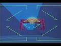
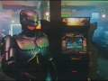
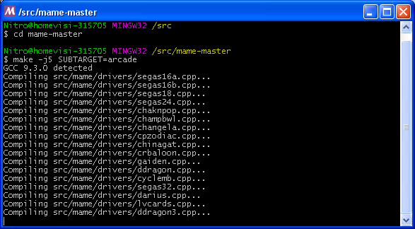

Homepage - mashinfo.github.io/mameinfo
E-Mail - mameinfo@ewetel.net
Visit ARCADE AT THE MOVIES



0.287GIT - New games: Triv III - New Non-Working games: Agro's Fantastic Video Game (version 2), Cranky Condor, Thunder V, Ultraman Club 3 and Versus. - New clones: Express Raider (bootleg), Gals Panic 4 (Asia), Ghosts'n Goblins (World? set 1) and John Elway's Team Quarterback (rev 1) - New AGEMAME games: Telly Addicts (New Series) (Bellfruit) (Cobra 3) - New drivers: agro.cpp, pachislo_z80.cpp, sammy_pachislo_z80.cpp, sis6326_pci and sis950_acpi - New devices: aha2940 - CPU . Analog Devices ADSP21062 'Sharc': Hooked up flag pin outputs for the interpreter. Hooked up flag outputs for the recompiler, push out flag latch state when switching from input to output (sharc\sharc.cpp). . Intel I386: Fixed SMM. Use the correct bits for DPL. Adjust CS for ppro+. Include the 486 (i386\i386.cpp). . Texas Instruments TMS32020/C25/C26: Small optimisation and cleanup: Templated relevant member functions on ignore ARP hack avoiding a data member check. Made IRQ cycles a local - it's never needed outside the scope where it's used. Skip hold logic if hold read callback is unset. Templated some member functions with simple variations (tms320c2x\tms320c2x.cpp). - DEVICE . Imagetek I4100/4220/4300 VDP: Fixed tilemap scroll in flip screen set (video\imagetek_i4100.cpp) . PC LPT: Added address_map variant for ISA PnP targets. LPT port 279 is read only, writes are routed to ISA PnP mode (machine\pc_lpt.cpp). . SCSI CD-ROM: Support the revised BlueSCSI host transfer protocol which allows up to 64K per chunk instead of 4K (nscsi\cd.cpp) . SiS 6326 AGP/PCI card: Hookup PCI variant "SiS 6326 PCI card" and VGA in VMI space. Initial BitBlt implementation. Fixed pattern regs mode and mouse caret in notepad (pci\sis6326.cpp). . SiS 630 VGA i/f: Start hooking up MD config pins, base hookup of TV Out space. Fixed lambda capture. Preliminary HW cursor. Added line compare "disable" and fixed display at 1600x1200 (video\pc_vga_sis.cpp). . VGA: Streamline VGA based PCI/AGP cards legacy structures (bus\pci\*) . VIA Apollo MVP3: Map ACPI_PIPC on 8-bit units, use a device_memory_interface workaround to avoid emumem mapping bug (machine\vt82c586b_acpi.cpp). Added IDE and ACPI irq routing (machine\vt82c586b_isa.cpp). - bfm_cobra3.cpp: Attempt to improve non-MPEG hardware parts. Added CD-ROMs to c3_ppays, c3_tellyns and c3_totp. Redumped c3_telly CD-ROM. - chamrx1.cpp: Expand motherboard notes - kaneko16.cpp: Added licensees to metadata and tidied code - lastduel.cpp: Reduced RAM size for Last Duel. Removed unneeded variables and init palette to black. Added manual sprite DMA trigger. - metro.cpp . Fixed tilemap scroll in flip screen set. Fixes flyingship in stage 6 of Varia Metal has misplaced graphics (video\imagetek_i4100.cpp) (ID 09376). . Improved metadata: Added region-specific titles to descriptions, and explanatory comments. Added assumed regions to descriptions based on game UI language. Fixed toride2gg set title (non-adauchi gaiden set unlike previously described metadata). Added distributor metadata for lastfortk set. Use the standard mahjong matrix (metro\metro.cpp). - namcos21.cpp and namcos21_c67.cpp: Don't hook up unused hold/ack (namco\namcos21_dsp.cpp and namco\namcos21_dsp_c67.cpp) - statriv2.cpp: Got rid of tag lookups, made use of derived classes and other small cleanups. Updated notes. - taitojc.cpp: Changed screen raw params (matches vsync measurement 99.999%) - Come On Baby: Improved device selection a bit (machine\it8671f.cpp/h). - Gals Panic 3: Cleaned up code: Suppress side effects for debugger reads. Reduced unnecessary memory accesses in RLE decompression. Made some variables const, use abbreviated integer types consistently. Don't split initialisation between files (kaneko\kaneko_grap2.cpp). Cleanup driver: Replaced macros with lambdas and reduced literal tags. Updated notes. Use abbreviated integer types consistently. - GameCristal: Moved ACPI implementation in own core (machine\sis950_acpi.cpp). Added enough SMI glue logic. - Games Family: Updated QA notes. - Mario Bros.: Walk sound trigger is from WR pin instead of D0. Put the masao bootleg in a subclass (ID 08997). Enable DYNAMIC_TS for clearer sound (nintendo/nl_mario.cpp). Added note about MCU internal rom: Dump M58715 internal ROM. The EA pin dumping method does not work, is the MCU read protected? It's probably a small initialization routine, followed by a jump to external ROM. MAME has a fake bootstrap for now. - Super Cross II: Assume Z80B is 5MHz and screen refresh rate is closer to 60Hz. Updated notes. Changed video emulation to tilemaps. Added flipscreen and fixed savestates. Small cleanup and update notes. - Wu Lin Zhengba: Fixed GFX ROM loading and ACRTC hookup. This will now actually throw a fatalerror with unsupported HD63484 COMMAND_DWT after few frames, as stated in header. - Description changes of 'B.C. Kid (World) / Bonk's Adventure - Arcade Version (US, China, Korea) / Kyukyoku!! PC Genjin - Special Arcade Version (Japan)', Bal Cube (Japan), Bonk's Adventure - Arcade version (prototype), Daitoride (Japan), Daitoride (Japan, YMF278B version), Dharma Dojang - Mangchi Man (Korea), Ghosts'n Goblins (World? set 2), Ghosts'n Goblins (World? set 3), Ghosts'n Goblins (World? set 4), Last Fortress - Toride: Mah-jong (Germany), Mahjong Doukyuusei (Japan), Mahjong Doukyuusei Special (Japan), Poitto! (Japan revision D), Pururun (Japan set 1), Pururun (Japan set 2), Puzzli (Japan revision B), Puzzli (Japan revision A), Toride II (German) and Toride II Adauchi Gaiden (Japan). - Renamed (gnga) to (gngb) and (gng) to (gnga) - SDLMAME: Implemented SDL_MouseWheelEvent integer member fallback for version less than 3.2.12. Added fallback for SDL_MouseWheelEvent when build with SDL3 < 3.2.12 (input\input_sdl3.cpp and sdl3\osdsdl.cpp). - MAME . DEVICES: Notify on changing preset images (emu\diimage.cpp) . UI: Fixed some cosmetic issues (ui\filemngr.cpp and ui\prscntrl.cpp) . Consolidate drivers into single file (lastduel.cpp) - Compiling . Allow USE_SYSTEM_whatever=0 to use local copies of third party libraries (scripts\src\3rdparty.lua) 0.286 - New games: Monkichicchi no Fuwafuwa Puzzle (Japan, prototype?) - New Working games: Chaoji Da Manguan II (China, V765C), Cherry Bonus III (ver.2.20), Cherry Bonus III (ver.3.0), Daytona USA (with Saturn advertisements), Daytona USA Special Edition (Revision A), Daytona USA, Daytona USA (Revision A), Dead or Alive (Export, Model 2A, Revision A), Dead or Alive (Model 2A), Dead or Alive (Model 2A, Revision A), Dead or Alive (Model 2B, Revision B), Dead or Alive (Model 2B, Revision C), Gunblade NY (Revision A), Jungle King (V302US), Long Hu Zhengba 2 (China, VS210M), Long Hu Zhengba 2 (China, VS220M), Manguan Caishen (China, V103CS), Manguan Caishen (China, V106CS), Manguan Caishen (China, V110C), Pilot Kids (Model 2A), Pilot Kids (Model 2B, Revision A), Shuang Long Qiang Zhu 2 VS (China, VS203J, set 2), Striker, Virtua Cop (Revision A), Virtua Cop (Revision B), Virtua Cop 2, Virtua Striker (Revision A), Virtua Striker, Zero Gunner (Export, Model 2A), Zero Gunner (Export, Model 2B), Zero Gunner (Japan, Model 2A) and Zero Gunner (Japan, Model 2B) - New Non-Working games: Dart Star (Rev 3.25), Doki Doki! Flower (DFL1, Ver. A), Luckey Bingo, Panda 2, Pitching Try (v1.3CJ), Polar Star (Ver 3,2B, Fantasy Island), Sea Wolf - Next Mission, Silver Rush (ver. 23.08.25), Siren Kids, Spanish Darts and Super Shuffle - New clones: Back Fire (Tecmo), Beastie Feastie (Pac-Man conversion, set 2), Big Twin (no girls conversion, set 2), Chaoji Dou Dizhu Jiaqiang Ban (S206CN), Dragon Punch (Japan, ver. 1.30, bootleg), G.I. Joe (Asia, AAB), Hot Mind (Hard Times hardware, set 2), MX5000 (version U), Major Poker (set 1, v2.2), Mahjong Kaguyahime (Japan 880425), Mario Bros. (Japan, older), New Lucky 8 Lines (set 21, encrypted bootleg), Pit Boss Superstar (9221-10-01A, California version), Polar Star (Ver 3,2B, MooRry Fantasy), 'Tarzan Chuang Tian Guan 2 Jiaqiang Ban (V306CN, alternate GFX)', Touryuumon (V1.1, Apr 14 2005), Vs. Hogan's Alley (Italian bootleg) and WGP 2: Real Race Feeling (World) - Removed games: Silverball (8.01) - New drivers: dharma_z180.cpp, fireshrk.cpp, mdartstr.cpp, namcos6.cpp, pitchtry.cpp, rallybik.cpp, seawolfnm.cpp and sshuffle.cpp - New devices: acpi_piix4, acpi_pipc, adsp21060, clgd5401, dspp_bulldog, f65535_isa16, f65535_vga, f82c836a, fdc37c665ir, gd5401, igs_incalt, isa16_medalist_rom_disk, it8661f, it8671f, nmk_irq, pc97338, rt1000b, toaplan_bcu, toaplan_dsp, toaplan_fcu, toaplan_video_controller, trio64dx_pci, um8498f, va_lpf4, voodoo_3000_x86, vt82c416, vt82c586b_acpi, vt82c586b_ide, vt82c586b_isa, vt82c586b_usb, vt82c598mvp_bridge, vt82c598mvp_host, z8691 and z86c91. - CPU . Analog Devices ADSP21062 'Sharc' . Include emu.h. Implemented 16-bit IOP write handling. Added missing DMA members to save states. Implemented bit-accurate RECIPS and RSQRTS in recompiler (fast approximation can be enabled by setting a macro) (sharc\sharc.cpp). . Fixed/optimised RECIPS flag calculation for interpreter. Fixed FIX for negative numbers when MODE1 TRUNC bit it set for interpreter and recompiler (should round towards negative infinity). Don't regenerate static helpers on cache flush (sharc\sharc.cpp). . Better align FIX between interpreter and recompiler, pack/unpack recompiler ASTAT for saved states. Cleaned up memory access a bit, use memory_access::specific and added ADSP21060 (larger internal SRAM) (sharc\sharc.cpp). . Always enable SHARC recompiler in the Konami drivers konami\gticlub.cpp, konami\hornet.cpp and konami\zr107.cpp before start. . Improved memory access code: Exploit data memory layout to bypass the memory system for both 32-bit and 16-bit SRAM accesses. Exploit the way the SHARC toolchain lays out executable code and data in SRAM to greatly reduce unnecessary cache flushes. Implemented Rn = NOT Rx (used by Sega Model 2B games). Align 32-bit program memory accesses with the most significant bit of the bus (corresponds to interpreter change in MAME 0.278 GitHub #13770). Get past DSP program crash in Midnight Run (sharc\sharcdrc.cpp) . Better handling of cache reset at end of block (sharc\sharc.cpp). Fixed more instructions: Fixed multiply/average and multiply/absolute for interpreter - the ALU operations produce a floating point result. Implemented move from multiplier register, multiply/average, average and FDEP with immediate field specification for recompiler. Use a more accurate approach for the absolute value calculation in multiply/average and average rather than hoping the C library does the right thing for the interpreter and recompiler (sharc\sharc.cpp, sharc\sharcdrc.cpp, sharc\compute.hxx). . Allow multiple loops to end on the same instruction. This is required by Last Bronx, which has code that de-duplicates the common part of multiple successive loops. It reduces the performance of do-nothing spin loops a bit but not too much - the DRC still has substantially better performance than the interpreter. Unfortunately, this exposes a pre-existing issue with how ASTAT conditions are handled in the SHARC front-end which causes the Midnight Run and Racing Jam DSP programs to crash. Fixing it will require major changes. Use -nodrc for now, I'll probably have to disable to recompiler before the next release until this can be fixed (sharc\sharc.cpp). . Tidied code a bit: Helper functions for getting commonly extracted opcode fields. More symbolic constants and fewer magic numbers. More constexpr helper functions, fewer macros and safer macros. More const local variables (cpu\sharc). . Improved reset conditions, prevent program from writing read-only STKY bits. Fixes 'Midnight Run' crash when F3 pressed (ID 07295). Improved status stack handling a little. Also actually implemented ASTAT/MODE1 save/restore for recompiler (cpu\sharc). . Overhauled PC stack implementation: Always access top-of-stack through the pseudo-register value. Better behaviour when PC stack is empty. Implemented effects of writing to PCSTKP. Mask PC stack values to 24 bits. Try to get PC stack into a consistent state after loading a saved state. Also fixed loops with initial counter value of zero (should iterate 2^32 times) (cpu\sharc). . Implemented a bit more channel 6 DMA. Fixes changing settings in Pilot Kids service mode menus. . Overhauled loop stack handling. Always access top-of-stack through pseudo-registers. Better behaviour when stack is empty or full. Implemented more read/write top-of-stack and explicit push/pop operations. Try to get loop stack into a consistent state after loading a saved state (cpu\sharc). . Better ASTAT handling: Flag pin bits are unaffected by push/pop status. Only flags set to input follow inputs on flag pins. Implemented ASTAT write for recompiler. Show ASTAT value in debugger when recompiler is enabled. Also don't allocated DRC cache when recompiler is disabled. Better sync on input changes across scheduling domains (cpu\sharc). . Pause DMA when stalled with recompiler to match interpreter. Disabled stalling DMA with recompiler for now. Current implementation gets confused, breaking Thrill Drive on Hornet (cpu\sharc). . Dynamic Re-Compiling . Fixes and refinements: Fixed crash when the CPU generates code during device_start and the debugger is enabled (devices\cpu/drc*). . drccache: Initialised all data members (cpu\drccache.cpp) . drcbec: Added support for invariant code and code blocks. Removed a bunch of crud that shouldn't be there. Restore floating point rounding mode if an exception is thrown, use C99 nearbyint/nearbyintf. Work around older clang that doesn't support the floating point environment access pragma (cpu\drcbec.cpp) . drcbeut: Added support for invariant code and simplified DRC label list class (only used by C back-end) (cpu\drcbeut.cpp) . drcbex86, drcbex64 and drcbearm64 . Added support for invariant code blocks and made helper code invariant (cpu\drcbex86.cpp, cpu\drcbex64.cpp and cpu\drcbearm64.cpp). . Call (rather than jumping to) the entry point handle. The UML HANDLE instruction points to a minimal function prologue, which expects the conditions immediately following a call. However, the back-ends were jumping to it directly after setting up the top-level stack frame. On x86-64 and i686, this resulted in the stack being misaligned until a HASHJMP or EXIT instruction was executed. Anything that could result in a C function being called (CALLC, DEBUG, BREAK, READ, READM, WRITE, WRITEM, FREAD, FWRITE) could crash due to stack misalignment, and RET would crash due to the return address not being in the expected location. On AArch64, the stack would not be misaligned, and calls to C functions would work correctly, but RET would result in exiting from generated code without restoring callee-preserved registers. The C back-end just hits an assertion failure if the entry point code executes a RET (cpu\drcbex86.cpp, cpu\drcbex64.cpp and cpu\drcbearm64.cpp). . Restore floating point environment when calling out to C code (cpu\drcbec.cpp, cpu\drcbex86.cpp, cpu\drcbex64.cpp and cpu\drcbearm64.cpp). . drcbearm64: Identify more valid bit mask immediates (saves an instruction and a temporary register, e.g. when clearing a small contiguous field in an integer) (cpu\drcbearm64.cpp). . drcuml: Added support for invariant code blocks. Include device tags in UML/native generated code log file names (kind of important when a system has two of the same kind of CPU) (cpu\drcuml.cpp). . hyperstone E1-xx and PowerPC DRC: Made static helper code invariant (e132xs\e132xsdrc.cpp, powerpc\ppcdrc.cpp) . Ensoniq ES5510: Fixed opcodes in ES5510. ABS uses operand B. CMP runs even when skippable and only updates flags (no dst write). SIGREG bit 22 drives mul shift. CCR/CMR readback encoding. ABS should update zero flag. ASL2/ASL8 overflow/carry/flag logic (es5510\es5510.cpp). . MIPS-III: Added missing header that was being #included indirectly (mips\mips3com.cpp) . Motorola MC68LC040: Fixed the 68LC040 so it actually has 68040 opcodes (m68000\m68kcpu.h) . Texas Instruments TMS34010: Fixed 32-bit pixel writes (tms34010\tms34010.cpp) . Toshiba TMP95C06x: Added model-specific LDC control register names for DMA registers. Implemented EI/RETI interrupt acceptance shadow (cpu\tlcs900/*). . Zilog Z80: Renamed BUSRQ to BUSREQ and MEMRQ to MREQ (z80\z80.cpp). Refactored INT/IRQ (z80\z80n.cpp) and implemented configurable DMA halt (delay) for (MESS) specnext.cpp. . Zilog Z86xx: Added Z8691 and Z86C91 ROMless types (z8\z8.cpp) - SOUND . Ensoniq ES5503: Revert ill-advised changes from MAME 0.285 and fixed an older regression that caused a crash in (MESS) Bard's Tale IIgs (Github #14941) (sound\es5503.cpp). . GI SP0250 LPC: Fixed typo in sp0250 coefficient table (sound\sp0250.cpp) . OKI MSM5205 ADPCM: S1/S2 pins were the wrong way around. Small cleanup. Make playmode_w param an u8 instead of int (sound\msm5205.cpp) . Sound Interface: Alternate method for checking if machine is not yet running (emu\sound.cpp) - DEVICE . Floppy: Added save state support (machine\upd765.cpp). Subscribe to remap FN. Issue a remap for later variants and fixed regression (isa\fdc.cpp). . GP9001 VDP: Cleaned up and simplified code: Removed unnecessary custom_priority_bitmap and priority remap table and use screen priority bitmap. Improved logging and reduced literal tag usage. Also suppress side effects for debugger reads for Toaplan drivers using the device. . Intel 8251 USART: Fixed uninitialised data accesses (machine\i8251.cpp) . Intel 82371EB PIIX4E: Preliminary integration of RTC. Added config map registers and use option setter for internal RTC use. Hookup fast A20 (machine\i82371eb_isa.cpp). Added I/O BAR registers (machine\i82371eb_usb.cpp). Use own ACPI implementation (machine\i82371eb_acpi.cpp). . Lowpass Filter: Improved LPF4 implementation. Using the new filter implementation in sound\va_vcf.cpp for CEM-3394 analog synth. Fixed 'drive' and improved documentation. 'drive' is now applied and unaplied outside the filter's feedback loop. Caching bass gain compensation. Annotated code with the relevant chapters from "The Art of VA Filter Design" (sound\va_vcf.cpp). . RAM: Shorter savestate name for things that do save_pointer(NAME(reinterpret_cast...) (machine\ram.cpp) . S3 86C775 Trio64V2/DX: Moved out Trio64/DX roms from isa\svga_s3.cpp and create Trio64V2/DX (pci\trio_pci.cpp). Added Trio64/DX to EuroPlay 2001. Fixed device ID - The one reported in datasheet is for the original Trio32 86C732. . Sega 315-5195 Memory Mapper: Update_mapping after loadstate (sega\315_5195.h) . VGA . Get rid of macros, optimize char selection base in text mode and optimize pixel fetches in SVGA modes (video\pc_vga.cpp). . Fixed start address and bank select. Moved EEPROM hookup to ISA cards (video\pc_vga_ati.cpp). Attempt to improve SVGA modes (video\ati_mach32.cpp). . Bulk replace typo for sis6326 VGA def. Fixed SVGA 8bpp mode and start address latch and 24bpp mode for 6326 (video\pc_vga_sis.cpp). . Fixed interrupt pin (pci\virge_pci.cpp) . VIA Apollo MVP3: Initial chipset definition. Added config map registers and initial PCI Bridge device (machine\vt82c598mvp.cpp). Preliminary VT82C586B IDE hookup. Added config map registers and allow HDD boot (machine\vt82c586b_ide.cpp). Initial 'Intel 82371EB PIIX4E USB Host Controller' support (machine\vt82c586b_usb.cpp). Hookup 'VIA Apollo MVP3' chipset for startouch.cpp. Type in ACPI_PIPC remaining registers. Hookup software SMI events (machine\vt82c586b_acpi.cpp). . Voodoo 3: Hookup Voodoo 3 3000 PCI roms (video\voodoo_pci.cpp) - 1943.cpp: Improved interrupt timing - 3do.cpp . Hookup basic semantics for CD-ROM DMA transfers (misc\3do.cpp) . Hookup status bit for xbus (greatly reduce boot times). Added enum for irqs and use template for request_fiq (misc\3do_clio.cpp). . Added unpacked & coded 4bpp and 8bpp support and basic PAL support. Added enum for DMA channels. Implemented get_pixel_6bpp_coded_lrform0 (misc\3do_madam.cpp) . Added enough commands so it reaches cmd_read when disk is in. Better logging around ToC. Added command byte acks to some commands (machine\cr560b.cpp). . Preliminary split between regular (Clio) DSPP and M2 Bulldog (dspp\dspp.cpp) - alpha68k.cpp: Renamed Alpha68K II/III/V hardware (shared\snk68_spr.cpp to alpha68k_spr.cpp) and cleaned up systems using it. Implemented device_gfx_interface and device_video_interface. Reduced hard-coded tags and use clock frequency input. Moved color code masking to callback. Use fixed size integers in save states and suppress side effects for debugger reads. Reduced duplicated code and literal tag use. Use abbreviated integer type names. - armedf.cpp: Make spriteram size same for all games - balsente.cpp . Fixed sound cutting off at low levels. Reduced duplication in volume calculation. Made it possible to set modulation to 0% (sound\cem3394.cpp). . Using the new filter implementation in sound\va_vcf.cpp. Removed artificial pulse width limiting (sound\cem3394.cpp). - cave.cpp and mcatadv.cpp: Correct tile RAM format comment. Low byte in First word of tile RAM is used for hi bits of tile code: 8x8 only? (video\tmap038.cpp). - cdi.cpp: Adjusted spin-up time to avoid soft-locks, fixes audio softlock in (MESS) Fun Tower and Misc Minor Edits. Simplify XA functions, use SECTOR_SIZE instead of magic numbers and log missing emphais. Removed newly-added unused member but left the comment. Fixed signed/unsigned mismatch (philips\cdicdic.cpp). Updated debugging log statements (philips\mcd212.cpp). - cps1.cpp: Changed comments to C++ style (capcom\cps1_v.cpp). Correct gfxdecode palette range. Small cleanup (capcom\cps1.cpp). - cps2.cpp: CPS2 bgpen is 0xbff just like CPS1 (capcom\cps1_v.cpp). Small cleanup. - cps3.cpp: Small cleanup - ddealer.cpp and nmk16.cpp . Lifted set_scroll_rows out of drawing loop (nmk\nmk16_v.cpp) . Refactored ddealer.cpp and nmk16.cpp video interrupt generation into separate device (nmk\nmk_irq.cpp). - docastle.cpp: Normalize blue color channel - exedexes.cpp and gunsmoke.cpp: Added manual sprite DMA trigger - fireshrk.cpp, rallybik.cpp and twincobr.cpp . Split fireshrk and rallybik from Toaplan1 driver. Improved notes (fireshrk.cpp). . Moved color base initialization into device_start. Fixed initializers and formatting. Added notes (toaplan\toaplan_scu.cpp) (rallybik.cpp and twincobr.cpp). - goldstar.cpp . Fixed nullptr crash in Bingo (set 1) and clone (set 2) (mark *all* tilemaps dirty) (ID 09378). . Fixed memory map. Added technical notes to clone Cherry Bonus III (ver.2.20). Promoted clones Cherry Bonus III (ver.2.20) and Cherry Bonus III (ver.3.0) to working. - gomoku.cpp and wiping.cpp: Removed unused variables - hornet.cpp . Enabled SHARC recompiler for NBA Play By Play, Teraburst and Thrill Drive G family games. . Improved SHARC recompiler: Fixed Gradius IV crash to prompt when testing MASK ROMS in Service Mode (F2) (ID 06322). Fixed Gradius IV background graphics corruption in stage 3 (ID 06535) - igs017.cpp . Improved protection emulation for M68K-based games. Implemented alternate inc protection type. Completed IGS029 simulation for most games. Reworked address remap functions to make them save state-friendly. . Promoted Chaoji Da Manguan II (China, V765C), Jungle King (V302US), Long Hu Zhengba 2 (China, VS210M), Long Hu Zhengba 2 (China, VS220M), Manguan Caishen (China, V103CS), Manguan Caishen (China, V106CS), Manguan Caishen (China, V110C) and Shuang Long Qiang Zhu 2 VS (China, VS203J, set 2) to working. . Redumped text ROM for clone Manguan Caishen (China, V110C) - lindbergh.cpp: Port over UHCI I/O map from i82371eb USB (machine\pci-usb.cpp) - lwings.cpp: Improved interrupt timing. Added screen raw params, manual sprite DMA trigger and paletteram is write-only. Moved video hardware section to the top of the driver. Make spriteram size same for all games. Added sprite dma delay. Small cleanup. - matmania.cpp: Added xtal and improved some clocks, fixes Mania Challenge sound pitch is too high and tempo is too fast (ID 09387). - mitchell.cpp: Added note about sprite DMA trigger - model2.cpp . Promoted games to working: Daytona USA, Daytona USA (Revision A), Daytona USA (with Saturn advertisements), Daytona USA Special Edition (Revision A), Dead or Alive (Export, Model 2A, Revision A), Dead or Alive (Model 2A), Dead or Alive (Model 2A, Revision A), Dead or Alive (Model 2B, Revision B), Dead or Alive (Model 2B, Revision C), Gunblade NY (Revision A), Pilot Kids (Model 2A), Pilot Kids (Model 2B, Revision A), Virtua Cop (Revision A), Virtua Cop (Revision B), Virtua Cop 2, Virtua Striker, Virtua Striker (Revision A), Zero Gunner (Export, Model 2A), Zero Gunner (Export, Model 2B), Zero Gunner (Japan, Model 2A) and Zero Gunner (Japan, Model 2B) . Got rid of now-obsolete SHARC 16-bit IOP workaround. Use render_polygon() rather than splitting polygons into triangles. Fixes/Reduces texture warping in hotd, overrev and waverunr (sega\model2_v.cpp). Also moved polylist dump code to sega\model2_m.cpp. . Enabled SHARC recompiler for Model 2B (can be disabled again before release if too many things are broken) (sega\model2.cpp) . Tentatively promoted some games to working and cleaned up code. Added blanket imperfect graphics flag to all games and imperfect sound to all games with SCSP. Added a side effects check, more ATTR_COLD and register game-specific things for save states (sega\model2.cpp). . Improved analog controls for Rail Chase 2 and Gunblade NY. Use full precision reciprocal for perspective correction (sega\model2rd.ipp). . Added analog minmax and increase sensitivity to Daytona USA. Use 8251 ready output line status rather than pretending to be able to read the status register asynchronously (sega\model2.cpp). - namcos23.cpp . Removed presently-unused m_odd_frame member. Added texture flip/swap bits. Removed stub handlers that were causing graphical issues in some games. . Fixes Fake enough comms to make 'Race On!' boot. Added texture flip/swap bits. Namco banners in Race On! and other places. Update DIPs for Race On! to deactivate wheel test. . Fixed handle controls in Final Furlong 2 and clone - nyanpai.cpp . Cleaned up code a bit. Filled in DIP switch settings for 'Mahjong Housoukyoku Honbanchuu' from manual. Correct transliteration of Nyanpai. . Cleanups: Use struct for each layer and made palette RAM into memory share. Reduced duplication and unnecessary code. Sync file/driver name with updated metadata. Use device_mixer_interface for sound routing (nichibutsu\nichisnd.cpp). - segahang.cpp, segaorun.cpp and segas16a.cpp: Moved driver_device overrides to protected - segas24.cpp: Put layer sort in a lambda. Changed a fixed size vector to array. Moved video hw section to top of file. - segaybd.cpp: Cleaned up. - sidearms.cpp . Correct Z80 clock (Guru README and now Jim Westfall). Removed old changelog and moved Guru README to driver notes. Improved interrupt timing. . OBJON and BGON enables were the wrong way around, watchdog is actually sprite DMA, vblank bit was on the wrong port and paletteram is writeonly (capcom\sidearms_v.cpp). - startouch.cpp: Hookup 'VIA Apollo MVP3' chipset. Moved out Trio64/DX roms from isa\svga_s3.cpp and create a new PCI target (pci\trio_pci.cpp). Added Trio64/DX to EuroPlay 2001. - stv.cpp . Formatting cleanup (sega\saturn_v.cpp). Fixed directory parsing on cross sector boundaries. Use busy state around drive status changes. Renamed stvcd to saturn_cd_hle. Removed unnecessary device_memory_interface trampoline. MAX_BLOCKS cleanup. Use emu_timer in place of timer generic. Command 0x51 is confirmed it doesn't generate a DRDY, pause drive when in buffull state (sega\saturn_cd_hle.cpp). Lock out DMA if trying to access VDP1 RAM and other stuff at same time. Fixed (MESS) gunblaze booting (sega\saturn_scu.cpp). Replaced macros in header with inline member functions. Reduced duplicate declarations (sega/stv.h and sega\saturn.h). . Convert macro flags to enum. Reduced function namings. Handle host RA updates properly. RA is actually its own thing. Fixed LEF behaviour and PC readbacks from host side. All ALU ops but AD2 doesn't update the upper 16-bit part. Tidy some expressions (scudsp\scudsp.cpp). - sunwise.cpp: Expanded NVRAM area to cover the entire static RAM. Update notes. - taito_f2.cpp: Fixed manufacturer title in cameltry and clone cameltrya (ID 09132) - taitosj.cpp: Hook up Z80 busreq/busack - tmnt2.cpp: Don't reuse 'i' variable in tmnt2_prot_w. Changed xlock/ylock check and improved palette dimming, fixes tmnt2 foreground graphics in Sewer Surfin' don't appear (ID 09385). Updated notes. Small cleanup. - toaplan1.cpp . Moved common parts of memory maps to helper functions. Reduced duplication, improved logging and correct DSP ROM size. . Encapsuated BCU, FCU, and Video controller hardware as devices. Reduced duplication in machine configuration. Fixed 'Out Zone (Zero Wing TP-015 PCB conversion)' raw params - it uploads same video timing parameter values as parent set to CRTC. Made sprite size LUT RAM as memory_share_creator. Use separate palette devices for each layer. Improved notes, reduced duplication and unnecessary functions. - tubep.cpp . Tube Panic: Refresh rate is ~59hz according to PCB video, so assume same screen raw params as Roller Jammer. . Roller Jammer: Z80 m1+iorq is the int ack cycle. Removed erroneous scanline sound interrupt. - twincobr.cpp: Suppress side effects for debugger reads, improved logging and correct DSP ROM size. Only install fsharkbt DSP handlers for clone Flying Shark (bootleg with 8741). - vicdual.cpp . Small cleanup to spacing. Mux input ports. Fixed dipswitch read in Invinco (ID 09382). . Correct 'Lives' dipswitch and sound flag in clone Super Crash (bootleg of Head On). Use inputs from supcrash for clone Colision (bootleg of Head On), fixes steering controls and dips don't work (ID 09389). - Big Karna: Use measured screen hz - Biomechanical Toy: Added PLD for 'Biomechanical Toy' variants - Bionic Commando: Added presumed sprite DMA trigger - Cloak & Dagger: Video/Resnet comes from emu, not devices. - Come On Baby: Manually rebuild HDD dump. Fixed PCI card mapping. Hookup serial ports. Hookup Voodoo 3 3000 PCI roms (video\voodoo_pci.cpp). Initial implementation of an ITE 8671F Giga I/O. Added keyboard and mouse IRQ lines (machine\it8671f.cpp/h). - Countertop Champion 2: Hookup MicroTouch. Confirm title in comments. - Densha de GO!: Added Japanese text and bulb color. Added shared group and the 1/2/3 lamps. Make brake pressure xx.x instead of xxxx (layout\dendego.lay). Update controller state in INPUT_CHANGED_MEMBER instead of screen_update and tweak lamp brightness. - Dottori Kun: Added ASCII PCB layout - Ez2dancer 2nd Move: Fixed PIIX4 config space mapping - F-1 Grand Prix: Redumped clone F-1 Grand Prix (Playmark bootleg) - Filetto: Extend voice note - Finalizer: Changed MCU type to M58715. Updated notes (mcs48\mcs48.cpp). - Five a Side Soccer: Increased default trackball sensitivity. It was way too low to use with analog controls before. - Go Go Strike: Identified motherboard type and retire pcat_base_state use - HeliFire: Lower MCU clock, fixes sound pitch is too high and tempo is too fast (ID 09386). - Invasion: The Abductors: Fixed gun position not detected on right side of screen, gun triggers were on wrong port (machine gun works now) (ID 06743). - Knuckle Bash 2 (bootleg): Moved kbash2-specific MSM6295 bankswitching into kbash2_state and improved kbash2 system description. - Mahjong Vegas: Correct 'Time Service Frequency' dipswitch typo - Mario Bros. . Changed Mario Bros. (US, Revision E) to parent and color prom back to the one when it was added. Consolidate driver into single file. Updated notes. TODO: Coin 2 doesn't work in mario and marioj (though it works in service mode). . Coin1/2 were the wrong way around. Added NVRAM. Removed some unneeded variables and clock macros. Removed OLD_SOUND discrete sound emulation and MCU macros (nintendo\mario_a.cpp). Added shared base memorymap. Removed some mario_ function prefixes. Use retry_access trick to sync 2-way cpu comms. Changed clone Masao audio clocks. Correct some romlabels. - Mega Double Poker: Marked Mega Double Poker and clone not working. Note: They've failed to boot for a while now. Also reduced duplication and literal tags a bit and got rid of a bankdev. - Monkey Magic: Added note about xtal. Reorded dsw settings from low to high. - Moon Raker: Added the starfield rom - NBA Hangtime: Dumped security PICs - P's Attack: Hookup EEPROM and CF slot rather than HDD - Pango Fun: Create new UM8498F chipset. Guess shadow RAM location. m_kbrst is high at startup (machine\um8498f.cpp). Get rid of pcat_base_state. Added ISA slots and replace baked in Trident ROM + bare VGA with actual AVGA1 (pc\pangofun.cpp). Added 'Cirrus Logic GD5401 AVGA1' card support (isa\svga_cirrus.cpp). - PC-Engine (battlera.cpp, ggconnie.cpp, paranoia.cpp, tourvis.cpp and uapce.cpp) . Make some variables constant. Reduced preprocessor macros. Use abbreviated type names and BIT helpers (Common PC-Engine hardware. See reference at: http://daifukkat.su/pcfx/). . Added input clock for video hardware (battlera.cpp and ggconnie.cpp) . Use XTAL for main clock. Reduced duplication. Fixed save state issues and initializers. Added notes for sound routing (ggconnie.cpp, paranoia.cpp, pcecommn.cpp/h. tourvis.cpp and uapce.cpp). . Improved logging (nec\pce_cd.cpp) . Hudson HuC6202 VPC: Reduced duplication and use more member arrays (video\huc6202.cpp) . Hudson HuC6260 VCE: Fixed initializer and save state issues. Made screen update function directly usable with screen device (video\huc6260.cpp). . Hudson HuC6261 VCE: Fixed initializer, debugging and save state issues. Prepare to hook up HuC6271/2 output. Made screen update function directly usable with screen device (video\huc6261.cpp). . Hudson HuC6270 VDC: Fixed initializer. Implemented 16-bit host interfaces use with PC-FX. Improved logging and reduced duplication (video\huc6270.cpp). . Hudson HuC6271 'Rainbow': Fixed initializer (video\huc6271.cpp). . Hudson HuC6272 'King': Fixed initializer and microprogram writes (16 halfwords). Reduced literal tags and improved logging. Gixed reading KRAM autoincrement value (video\huc6272.cpp). - PC hardware: Added quick ref for POST codes (pc\README.md) - PinMAME: Dumped security PICs for Corvette and Phantom Haus - Play 4 Texas Hold'em: Additional notes. Changed name to be same as manual. Updated year to 2011 based on last patch. - Pull The Trigger: Added base sis630 chipset - Qianxi Jielong: Fixed palette. Added Oki ROM banking. - R2D Tank: Added note about older version: R2D Tank is a cost-reduced 'sequel' to "Red Tank", Sigma probably contracted Orca to simplify the hardware. The first version (Red Tank) is on 2 PCBs with "FUJIDENSHI" on the EPROM labels. Sigma's "The Goku" is on the same earlier hardware as Red Tank. - Reality Tennis: Replaced macros with constexpr - Silent Scope 2: Removed badly dumped ROM that would fail POST and correct LAN EEPROM location for clones sscope2ac, sscope2acvd1, sscope2ec, sscope2ecvd1, sscope2jc, sscope2jcvd1, sscope2uc and sscope2ucvd1. Updated PCB info. - Silverball: Fixed HDD loading. Retire slvrball806 set, use MACHINE_IS_BIOS_ROOT for the base BIOS package. The dump is non-workable, it just crashes strong. - Striker: Fixed address map. Promoted game to working. Note: This PCB features flying wires going between the Z80, the GM76C28A-10 RAM and a GD74HCT138 3 to 8 line decoder/demultiplexer. It reads 2 times the address 0x60f0/60f1 during RAM test at boot (show "RAM NO GOOD" if wrong value), at coin up and at bet. - Tiger Road: MSM5205 in clone 'Tora e no Michi (Japan)' is hooked up same as Trojan (capcom\lwings.c) (also tried with capcom\sf.c, but got bad sound). - Tournament Table: Added PLAYER4 analog direction control defaults (emu\inpttype.ipp) (MT09383). - Vector games . Added LUA bindings for vector-screen interfaces. Added a callback mechanism to expose vector drawing to the LUA interface, allowing external hardware devices to interface with MAME's vector rendering code (video\vector.cpp and mame\luaengine.cpp). . Refactored LUA hooks for vector devices (video\vector.cpp and mame\luaengine.cpp). - WGP: Real Race Feeling: Increased 68000 clock - Description changes of Beastie Feastie (Pac-Man conversion, set 1), Big Twin (no girls conversion, set 1), BnB Arcade (V1.0005 World), Daytona USA (with Saturn advertisements), Flak Attack (Japan, version P), Flak Attack (Japan, version P, PWB 450593 sub-board), Happy Tour (V1.12), Hot Mind (Hard Times hardware, set 1), Invasion: The Abductors (version 3.0), Invasion: The Abductors (version 4.0), Invasion: The Abductors (version 5.0), Jiao! Jiao! Jiao! (China), Knuckle Bash 2 (bootleg of Knuckle Bash), Mario Bros. (Japan, revision C), Mario Bros. (US, revision F), Major Poker (set 2, v2.0), Major Poker (set 3, Micro Manufacturing intro), Major Poker (set 4, Micro Manufacturing intro), Major Poker (set 5, Micro Manufacturing intro), MX5000 (version R), Nyanpai (Japan), Qianxi Jielong / Hongxin Jielong, Slap Fight (Japan, A76 set, GX-006-A PCB) and Slap Fight (Japan, A77 set, 8606M PCB). - Fixed rom names in ghosteo.cpp, hominn_980924.cpp, mario.cpp, namcos1.cpp and superqix.cpp - Renamed (backfirt) to (backfirtb), (gijoea) to (gijoeaa), (majorpkr) to (majorpkr20), (mario) to (mariog), (marioe) to (mario), (mx5000) to (mx5000r), (niyanpai) to (nyanpai), (wgp2) to (wgp2j) and (touryuu) to (touryuua) - Dipswitch fixes in 4enraya.cpp, igs017.cpp, midwunit.cpp, namcos23.cpp, mario.cpp, (pullttrig) to (pulltrig), tecmo.cpp, niyanpai.cpp and vicdual.cpp - MAME . VIDEO RENDERING SYSTEM . Don't use reserved _Names (util\palette.h) . Added LUA bindings for vector-screen interfaces. Added a callback mechanism to expose vector drawing to the LUA interface, allowing external hardware devices to interface with MAME's vector rendering code. Refactored LUA hooks for vector devices (video\vector.cpp and mame\luaengine.cpp) . Fixed polygons with shared vertices not rendering correctly and correctly map parameter values to each extent (video\poly.h). . MEMORY SYSTEM: On switch, do nothing if selected slot is same as before (emu\emumem_mview.cpp). . ROMLOAD: Replaced various macros with constexprs and inline functions. Mark ROM_OPTIONAL as deprecated (emu\romentry.h and emu\romload.h). Constexpr at namespace scope implies static for variables and inline for functions (emu\romentry.h). . INPUT . Don't gate creating input device behind -mouse option, it breaks -mouse_device, -trackball_device, etc (input\input_win32.cpp). . Removed barely used IPT_TILT1/2/3/4, combine IPT_GAMBLE_DOOR with IPT_INTERLOCK and rename to generic IPT_DOOR (emu\inpttype.ipp). Added some content for Input Macro and Off-screen Reload plugins (docs\source\plugins\inputmacro.rst and offscreenreload.rst). . Added PLAYER4 analog direction control defaults (emu\inpttype.ipp) . UI/OSD . Added nine extended Latin and IPA characters and added CC0-1.0 license comment (uismall.bdf). . Made hide_romless text clearer (ui\submenu.cpp). . Limit frame updates on initial gameinfo/warning screens and avoid host CPU/GPU resource spiking (ui\ui.cpp). . Added throttled frame update to another startup event loop and sleep for 1ms. Only sleep if no frame update (ui\ui.cpp). Added message if menu is empty (ui\confswitch.cpp). . Only clip the cursor if we haven't already. On Windows, cursor clipping is global and needlessly invoking 'ClipCursor(nullptr)' will interfere with other applications that might also be trying to clip the cursor. With this change, MAME will only invoke 'ClipCursor(nullptr)' if MAME previously clipped the cursor (windows\window.cpp). . Reverb configuration: Fixed uninitialised data accesses (audio_effects\reverb.cpp). Don't crash on the network devices menu when there are no network interfaces (GitHub #14959) (ui\miscmenu.cpp). . PLUGINS: hiscore.dat update (plugins\hiscore\hiscore.dat). Refactored LUA hooks for vector devices (plugins\vector\init.lua + plugins\vector\plugin.json). . Consolidate drivers into single file (fantland.cpp, kickgoal.cpp, lethalj.cpp, mario.cpp, rltennis.cpp, segahang.cpp, segaorun.cpp, segas16a.cpp, segas24.cpp, segaxbd.cpp, segaybd.cpp, starcrus.cpp, taito_l.cpp, tecmo.cpp and wgp.cpp) - SDLMAME . Initial support for SDL3. SDL3 is the default for macOS targets. Linux/Windows can build with OSD=sdl3 while we wait for better distro support for SDL3. Both X11 and Wayland sessions are fully supported on Linux. SDL3 -sound=sdl supports both input and output. All other video, sound and input functionality should otherwise be the same for now. SDL 3.4+ multiple keyboard/mouse support is planned. . Fixed font lookup (font\font_sdl3.cpp, lib\osdobj_common.cpp). Fixed key up not being sent on some systems. Fixed assert on new instance of joystick connected (input\input_sdl3.cpp). Enable TEXT_INPUT events, fixes text input fields in the UI (sdl3\window.cpp). - Compiling . Small comments cleanup to copy-pasted sprite drawing routines. Lots of ATTR_COLD and some code cleanup. . Fixed last remaining tautological compare warnings for Clang/ARM64 (nscsi\tape.cpp and util\ioprocs.cpp). Promoted tautological comparison warning to an error (scripts\genie.lua) . Fixed testkeys linking on Windows. Hopefully fix testkeys building with SDL3 (scripts\src\tools.lua). Don't build per-subtarget OSD libraries (src\osd\*). Fixed MAME_PROFILER leaking from a debug build to subsequent release builds (makefile, scripts\genie.lua). - Debugger . Check that you have a memory interface before trying to use it (debugger\win, debugger\osx and debugger\qt) (ID 09377) . Allow device_state_interface to participate in global symtable state (debug\debugcpu.cpp and debug\express.cpp) . Bulk replace uint8/16/32_t to u8/16/32 (machine\cs4031.cpp, f82c836.cpp, um8498f.cpp and wd7600.cpp) . Fixed hang when a watchpoint is hit on a 64-bit wide address space with word addressing (debug\points.cpp) 0.285 - New games: Moon Raker, Relief Pitcher (System 1, prototype) and Waku Waku Jumbo (Rev A) - New Working games: 'Maque Wangchao / Chaoji Da Manguan 2 - Jiaqiang Ban (China, V100C)' and The Pirates of Dark Water (SNES bootleg) - New Non-Working games: Diamond Heart Plus (v18.0), Gamebox, Lan Mao, Modern Cart and Multi Game 9 (ver 9.04 Eng). - New clones: Cherry Bonus III (ver.2.20), Cherry Bonus III (ver.3.0), Devil Fish (Nuova Videotron bootleg), Dingo (Nuova Videotron bootleg), Dirt Dash (World, DT2 Ver.C), Empire City: 1931 (US, bootleg), Happy Farm (Ver. IN.01.01.A), Jungle King (Nuova Videotron bootleg), Puzz Loop (Korea, bootleg), Revolution X (revision 2.0 9/8/94), Sparkle (v1.1.3), Super Poker (v305US), Tic Tac Trivia (6221-20, U5-0B, 11/17/85), Trivia ? Whiz (6221-03, U5-0) and Vanguard (SNK, set 2) - New AGEMAME games: 21 Club (Barcrest) (German) (MPU4) (GTW 2.7), Crown Jewels Deluxe (Barcrest) (German) (MPU4) (CJG 0.4, set 2), Cup Final (Nova) (MPU4) (set 3), Pink Panther (German) (Maygay) (M1A/B) (set 2) and Roadrunner - Removed games: Trivia ? Whiz (6221-00) - New drivers: gamebox.cpp, lanmao.cpp, mgt_multigame.cpp and subsino_kr_h8.cpp - New devices: amy, clio, cr560b, floppy_twiggy, lc6554, m146805e2, madam, scsi_cdrom_apple_ext and xetec_c5181 - New Clrmame: https://mamedev.emulab.it/clrmamepro/#downloads - New DATs: GameInit.dat (https://www.progettosnaps.net/gameinit/) - Bob Zed (What's new): https://youtu.be/46V7ug1pxIY - CPU . Analog Devices ADSP-2100: Correct some tabulaton that had rotted (adsp2100\adsp2100.cpp) . Dynamic Re-Compiling . drccache: Defer allocating to start, allow forcing W^X mode. Added helpers for allocating structures/objects in the cache. Supply desired alignment when allocating cache memory (not fully implemented). Log some statistics on destruction (cpu\drccache.cpp). Added -[no]drc_rwx option to allow forcing W^X mode when writable executable pages are permitted (emu\emuopts.cpp). Minimise the number of pages that need protection changes. Only mark pages writable starting from the beginning of unused space. Honour requested alignment for allocations (cpu\drccache.cpp). . drcbeut: Allocate (misnamed) hash table blocks from the permanent cache area so they aren't intermixed with executable code. Allow back-end to specify preferred alignment for hash table blocks (cpu\drcbeut.cpp). . drcbearm64: Shuffled generated code for HASHJMP a bit to be less sensitive to load latency (cpu\drcbearm64.cpp) . PowerPC DRC: Allow DRC cache size to be set externally at configuration time, so systems can override the default (cpu\powerpc/ppc.h and powerpc\ppccom.cpp). . 3DO DSPP, hyperstone E1-xx + Hynix GMS30C2xxx: Don't allocate DRC resources if recompiler is disabled (dspp\dspp.cpp and e132xs\e132xs.cpp). Simplify arithmetic right shift calculations (e132xs\e132xsop.hxx). . ARM7: Removed ARM7 from the list of DRC CPUs since its incomplete recompiler functionality was removed (scripts\src\cpu.lua) . Analog Devices ADSP21062 'SHARC' . Fixed bug in shift, obvious optimisations: Fixed shift with variable count when count is positive (should shift left, was shifting right). Use recently-introduced UML bit field extract instructions. Don't follow arithmetic with redundant compare to zero if only zero flag is required. Let the back-end take care of fetching source from memory or immediate for simple arithmetic. Assume the back-end knows how to generate conditional CALLH. Use BIT helper. Don't assume x86-like magic sequence breaking on self-XOR. Correct a comment that didn't match the code. Handle corner cases for FEXT. The interpreter probably needs updating, too. Fixed MIN and MAX when Rn and Ry are the same register. Handle corner cases for FDEP. Cleaned up formatting of 64-bit values and initialisation of opcode dispatch table (sharc\sharcdrc.cpp). . Fixed SV flag for LSHIFT/ASHIFT in recompiler (interpreter was correct). Simplified generated code for FEXT with non-immediate bit position/length in recompiler. Fixed off-scale ASHIFT in recompiler. Fixed off-scale FEXT with sign extension in interpreter (sharc\sharcdrc.cpp and sharc\sharcops.hxx). . UML: Correct syntax for generating UML conditional CALLH instructions (docs\source\techspecs\uml_instructions.rst) . Intel 8051: Some variables were missing savestates after OG's refactor (MAME 0.283). Small cleanup to spacing. Clean up some single line comments (mcs51\i8051.cpp). . Motorola MC68008: Fixed crash when trying to set PC from debugger (m68000\m68000.cpp) . Texas Instruments TMS32xxx . Improved naming of TMS320 series DSPs. Name folders after families rather than the first family member emulated by MAME (yes, TMS320C1x and TMS320C2x are retrospective names). Follow TI's convention of including the "C" in the names. Don't try to jam all the disassembler source file names into 8.3. The TMS32010, TMS320M10 and TMS320C10 are different things, but unfortunately MAME hasn't made a distinction between them so far. As far as I can tell, early DECTalk devices used TMS32010 or TMS320M10 chips, while the Atari and Toaplan games used TMS320C10 chips, but this should be verified. . Got rid of some superfluous parentheses (tms320c3x\320c3x_ops.ipp). Marked TMS320C31 as parent ROM of TMS320VC33. . Zilog Z80: Fixed IRQ state if comes from daisy chain (z80\z80.cpp) . Zilog Z80180/Z8S180/Z80182 and Hitachi HD64180RP: Can't shortcut with m_icount=0 after SLP opcode due to possible background Timer/DMA (z180/z180.cpp) - SOUND . Atari C012294 POKEY: Don't flag SEROUT full when held in reset (sound\pokey.cpp) . Ensoniq ES5503: Fixed off-by-1 sample position adjustment on looping (Github #14582; sound\es5503.cpp) . MM5837 Digital Noise Source: Configuration interface simplifications (sound\mm5837.h) . TMS5110: Removed romclk_hack (sound\tms5110.cpp) - DEVICE . Floppy: Minor code cleanup (tools\floptool.cpp) . Fujitsu MB87030 SCSI controller: Fixed some timings (drq write would shorten waits) (machine\mb87030.cpp) . Imgtool: Retired the get_chain method. This is no longer implemented by any supported filesystem, and no command made any use of the information it provided (floptool's flopblocks command is functionally comparable) (imgtool\imgtool.cpp). . Konami 033906 PCI bridge: Added read side effects check (machine\k033906.cpp), should fixes debugger crashes when accessing 0x3500000 in SHARC data space memory in all hornet.cpp sets. Correct k033906_device init order (ID 08830). . Namco C123 (4x + 2x Tilemaps): Zerofill control regs (namco\namco_c123tmap.cpp) . Sanyo LC7535: Use device_sound_interface. Removed custom volume callback. Added option to use a logarithmic gain scale. Use explictly sized variables (sound\lc7535.cpp). . SCSI Hard Disk: Allow to add a per-driver default HD model (still overriden by an IDNT metadata) (nscsi\hd.cpp). . VGA: Added imperfect feature graphics where it belongs (video\pc_vga_*) - New drivers: subsino_kr_h8.cpp - 1943.cpp: Document and hook up buffered sprite RAM. - 20pacgal.cpp: Small cleanup. Added screen raw params after Guru measured video timing. Removed useless do_pen_lookup function. Updated notes. - 39in1.cpp: Swap CGA and VGA option text - 3do.cpp . Misc notes. Split 'Uncle' in own memory map. Converted 'Madam' and 'Clio' to address_map. Split Madam and Clio into own devices. Split BIOSes by model types, retire original 3do_ntsc/3do_pal romsets. All new dumps provided by [3dodev]. HC-21 is an unreleased USA model. Added kanji region stub for alg sets. Fixed execution for IS_BIOS_ROOT romsets. Preps for VDLP display list parsing, added Amy stub. Hookup Portfolio SWI calls to DASM. Replaced memory_bank with a memory_view for overlay handling. Added adbio output support and hookup kanji ROM for Japanese systems (misc\3do.cpp). . Initial hookup of a CR-560-B CDROM drive (machine\cr560b.cpp) . Fixed lambda capture (misc\3do_m.cpp). . Hookup DSPP. Added logmacro. Hookup DSPP DACs. Hookup expansion bus interrupt. Convert system timer to emu_timer. Use slack as system timer tick unit (misc\3do_clio.cpp). . Moved diag port as devcb, disable by default. Added player bus DMA. Initial checkin for Cel engine emulation. Improved Cel pixel writes. Added CEL 16bpp packed source. Implemented bgnd, sign extend xpos & ypos, 6bpp packed CEL and coded 4bpp and 16bpp packed CEL. Hookup stopgap player 1 inputs (misc\3do_madam.cpp). . Moved drawing into Amy (misc\3do_amy.cpp) - cps2.cpp: Don't set sprite priorities before screen_update (ID 09369). Fixed hardware documents. - cv1k.cpp: Fixed device naming and minor cleanups. Changed ep1c* files filename to cv1k_v*, because this file is emulation core for cave CV1000 hardware specific and more closer to describe actual purpose, also ep1c is part family name of Altera Cyclone (1) FPGAs. Suppress side effects for debugger reads, use logmacro.h for replace plain logerror function. Reduced some duplicates and unnecessary device finder. Make some variables constant. Use reference to replace pointers and util::sext for signed values. Added notes (cave\cv1k_v.cpp). Fixed metadata for describe region. Use shorter typename value for consistency and reduced duplicates. Improved naming and logging. Reduced literal tag usage and unnecessary functions. Added notes (cave\cv1k.cpp). - cvs.cpp: Lower TMS5100 clock (no xtal). Note: TMS5100 is around 620kHz from an R/C osc with a VR, slightly differs per PCB. - deco32.cpp . Fixed volume control for Dragon Gun and Locked 'n Loaded (ID 05422) . Updated Dragon Gun for new LC7535 interface and support switching the gun OKI output between gun speaker and main speaker. . Use common xtals for Night Slashers. Confirmed Tattoo Assassins maincpu xtal. Lower soundcpu clock for Dragon Gun, Fighter's History, Locked 'n Loaded and Night Slashers. - deco156.cpp: Implement volume control for Heavy Smash - goldstar.cpp: Cleaned up various stuff - hornet.cpp: Added read side effects check (machine\k033906.cpp), should fixes debugger crashes when accessing 0x3500000 in SHARC data space memory in all hornet.cpp sets. Correct k033906_device init order (ID 08830). - jaguar.cpp . Rewrote EEPROM access, fixes (MESS) jaguar [cfodder] has no access to the SRAM (ID 09342). Fixed Player 2 buttons. Fixed quickload regression. Fixed random crashes in Fishin' Frenzy startup (access cojag_gun_input_r, leftovers?). Workaround for (MESS) battlesp/battlesg black screen. Fixed wave ROM endianness. Allows BIOS logo to correctly play notes. Make jaguarcd to boot from BIOS ROM, fixes screen size (atari\jaguar.cpp). . Don't set a pending irq if line is masked. Use set_input_line for irq 0 as well. Massage unaligned accesses towards Tom & Jerry. Makes (MESS) jaguar protect and protctse playable. R30 gets overwritten on irqs. Fixed shlq calculation. Former fix for (MESS) jaguar kasumi booting. Fixed mmult opcode, fixes BIOS ATARI letters, 3d renders in (MESS) superx3d and hstrike. Added N flag for abs opcode and simplify calculation. Accumulator readback is sign extended. Get rid of imultn hack. Make the branch hack confined to CoJag (cpu\jaguar\jaguar.cpp). . Stop opcode populates object code too. Correct RMW masks. Regular bitmap rewrite of 16bpp and 24bpp using pitch base. Bump number of object processor max entries to 200, fixes (MESS) jaguar raiden ranking screen and ttoonadv missing gameplay GFXs. Moved out object pointer from process functions. Implemented BCOMPEN, fixes (MESS) jaguar missil3d text and original version GFXs. Implemented pitch in scaled 8bpp bitmap and blending in scaled 16bpp. Partially fixes (MESS) jaguar mutntpng and phase0 main menus, respectively. Avoid potential crash in (MESS) raiden. Fixed object code returns (atari\jagobj.ipp). . Attempt to make scanline_update safer. Mask host irqs if correlated bit in INT1 isn't enabled. PIT GPU timer are after regular clock with no internal divider, fixes (MESS) jaguar raiden BGM tempo. Disable PIT on prescaler == 0xffff. Blitter readback fix for (MESS) jaguar avsp. Upcast PIT and JPIT to u64 resolution, fixes hang regression in (MESS) jaguarcd. Stop drawing at display end, fixes valdiser gameplay flickering. Partial implementation of suspend state in object processor, fixes (MESS) kasumi rowscroll floor. Moved line buffer array as variable and clear it when starting object processor, fixed (MESS) valdiser playfield (atari\jaguar_v.cpp). . Added JPIT1 and JPIT2 irq sources, fixes sound in (MESS) jaguar cybermor and mutntpng. Sort out JPIT irq section. JPIT setups needs either prescaler or divider set to work, fixes (MESS) jaguar pbfant sound. Allow changing serial frequency after setting SMODE. Allow playback of BIOS roaring sample. Clear DSP irq lines on JPIT and serial disabled. Extend CoJag Jerry irq hack note (atari\jaguar_a.cpp). . Multiply pitch in source and destination widths. Fixed 3D renders for chekflag and others. Improved non-TOPBEN handling. Fixed (MESS) hstrike difficulty select blending and partially fixed (MESS) battlesp main menu. Preliminary GOURZ support. Fixed clipping A1. Shows proper spinning cube in BIOS (atari\jagblit.ipp). - lethalj.cpp: Added support for savestates - m10.cpp: Removed screen timing constexpr from class - model1.cpp: Default NVRAM is 1-filled - model2.cpp: Delay IRQ mask update by 2 cycles. Avoids possibility of sound_ready_w() bypassing the 2 cycle delay and firing a sound interrupt too early. - mpu4bwb.cpp: Removed preprocessor line continuation backslash that's asking for trouble - neptunp2.cpp: Made 'La Perla del Caribe' show the first error - raiden2.cpp: Moved systems with blending to a separate state class and reduced code duplication (seibu\raiden2.cpp). Draw sprites using priority for xsedae (no blending) (seibu\raiden2_v.cpp). Removed static member declarations that aren't actually defined (seibu\raiden2.h). - royalmah.cpp: Correct some DIP switch settings for Mahjong Tensinhai and Mahjong Raijinhai. Filled in Mahjong Raijinhai DIP switches from available manual pages. - segas16b.cpp: Moved game specific savestates to game specific init - shadoww_ms.cpp: Fleshed out driver. Most glaring remaining problem is sound isn't hooked up. - shougi.cpp: Hook up sharedram direction bit, small cleanup. - snk.cpp: Added 2 missing save state variables (snk\snk_v.cpp) - taitojc.cpp: Added wheel_motor for Side by Side and Side by Side 2 - Ace: Improved colors, increased score panel size and added border graphics and confsettings. Small cleanup. Correction to in2 offsets and leave sound triggers unmapped. TODO: Discrete sound is unemulated. What are the unknown inputs in IN2 for? Extra coin sensors? The cabinet does not have a start button. Is the border correct? There's one photo online with gaps in the border. Does it mean planes can fly through at one point, or was it just a PCB malfunction? The flyer shows alternating white/black border objects, but PCB references don't. - Alien3 The Gun: Added PORT_MINMAX to the Y direction to avoid the value going out of range. Fixes aiming reticle rolls over from top of screen to bottom in alien3, Service Mode shows value for UP goes beyond max FF value back to 00 (ID 08679). - Amiga/CDTV: Added new CPU 'Sanyo LC6554' MCU core. Implemented front panel with VFD and control buttons. Play/Pause, Stop, Previous and Forward buttons not yet working because the "Remote Control Input Converter" isn't hooked up yet. - Choplifter: Note that IC7, IC13 and IC19 (315-5025) are not PLDs, but are a custom graphics shifter. - Clay Shoot: Added PIT8253 sound and increased Z80 clock. Removed tag lookups. Changed ad sticks to paddles and fake skill switch toggles to confsetting. Added dsw locations. TODO: Missing SN76477 sound effects. - Donkey Kong Junior: Redumped GFX ROMS for clone Donkey King Jr. (Nuova Videotron bootleg). Note: Missing gfx now appear on screen (i.e. title screen). Measured clocks for clone Donkey King Jr. (Nuova Videotron bootleg). - IPM Invader: Fixed bases tile drawing for clone 'IPM Invader (M11)' (ID 09357) - Ken Sei Mogura: Added separate views for the moles. Tweak colors a bit (layout\kenseim.lay) - Knuckle Joe: Added screen raw params from video measurements. Normalize red color channel for 2nd half of palette. Added note about overclocked Z80. - Maque Wangchao / Chaoji Da Manguan 2: Improvements. Hooked up protection device emulation and Oki ROM banking. Redumped Oki ROM. Promoted game to working. - The Pirates of Dark Water (SNES bootleg): Promoted 'The Pirates of Dark Water (SNES bootleg)' to working - Qianxi Jielong: Added BG layer - Rolling Crash / Moon Base: Use rom PCB locations from moonbase and removed MB14241 Shifter IC - The Simpsons: Changed screen visible width to 320 again after confirming it on a 2nd PCB - Traverse USA / Zippy Race: Normalize red color channel - Trivia ? Whiz: Removed 'Trivia ? Whiz (6221-00)'. Note: Same as clone 'Trivia ? Whiz (6221-00, with Sex trivia)'. Added 'Trivia ? Whiz (6221-03, U5-0)' (Merit 1985). Dumped newer program ROMs for Trivia Whiz as well as the question decoder PROM for the Trivia Whiz sets. - Tropical Angel: Added screen raw params based on M52 and TODO notes - unknown VRender0+ bowling game: Minor notes update - Western Venture: Provided good dump for Western Venture (Ver. AA.02.D) program ROMs - Fixed rom names in 8080bw.cpp, astrcorp.cpp, clayshoo.cpp, cle68k.cpp, megasys1.cpp and vicdual.cpp - Description changes of Crown Jewels Deluxe (Barcrest) (German) (MPU4) (CJG 0.4, set 1), Deathsmiles (Japan, 2007/10/09 MASTER VER), Deathsmiles MegaBlack Label (Japan, 2008/10/06 MEGABLACK LABEL VER), DoDonPachi Dai-Fukkatsu Black Label (Japan, 2010/1/18 BLACK LABEL), DoDonPachi Dai-Fukkatsu Ver 1.0 (Japan, 2008/05/16 MASTER VER), DoDonPachi Dai-Fukkatsu Ver 1.5 (Japan, 2008/06/23 MASTER VER 1.5), Donkey King Jr. (Nuova Videotron bootleg), Espgaluda II (Japan, 2005/11/14 MASTER VER, newer CV1000-B PCB), Espgaluda II (Japan, 2005/11/14 MASTER VER, original CV1000-B PCB), Espgaluda II (Japan, 2005/11/14.MASTER VER.), 'The Fallen Angels (World) / Daraku Tenshi: The Fallen Angels (Japan)', Ibara (Japan, 2005/03/22 MASTER VER..), Ibara (Japan, 2005/03/22 MASTER VER.., '06. 3. 7 ver.), Ibara Kuro Black Label (Japan, 2006/02/06 MASTER VER.), Ibara Kuro Black Label (Japan, 2006/02/06. MASTER VER.), Medal Mahjong Moukari Bancho (Japan, 2007/06/05 MASTER VER.), Muchi Muchi Pork! (Japan, 2007/ 4/17 MASTER VER.), Mushihime-Sama (Japan, 2004/10/12 MASTER VER), Mushihime-Sama (Japan, 2004/10/12 MASTER VER.), Mushihime-Sama (Japan, 2004/10/12.MASTER VER.), Mushihime-Sama Futari Black Label - Another Ver (World, 2009/11/27 INTERNATIONAL BL), Mushihime-Sama Futari Black Label (Japan, 2007/12/11 BLACK LABEL VER), Mushihime-Sama Futari Ver 1.0 (Japan, 2006/10/23 MASTER VER.), Mushihime-Sama Futari Ver 1.5 (Japan, 2006/12/8 MASTER VER 1.54), Mushihime-Sama Futari Ver 1.5 (Japan, 2006/12/8.MASTER VER. 1.54.), Packy no Treasure Slot (Japan, main ver. 1.3, video ver. 1.1), Pink Panther (German) (Maygay) (M1A/B) (set 1), Pink Sweets: Ibara Sorekara (Japan, 2006/04/06 MASTER VER.), Pink Sweets: Ibara Sorekara (Japan, 2006/04/06 MASTER VER...), Pink Sweets: Ibara Sorekara (Japan, 2006/04/06 MASTER VER....), Pink Sweets: Ibara Sorekara (Japan, 2006/xx/xx MASTER VER.), Puzzle! Mushihime-Tama (Japan, 2005/09/09 MASTER VER), Puzzle! Mushihime-Tama (Japan, 2005/09/09.MASTER VER), Revolution X (prototype, revision 5.0 5/23/94), Revolution X (revision 1.0 6/16/94), Sol Divide: Sword Of Darkness (Korea), Sol Divide: Sword Of Darkness, Sonic Blast Man no Janken Battle (Japan, main ver. 1.1, video ver. 1.0), Vanguard (SNK, set 1) and Video Pool (Nuova Videotron bootleg of Video Hustler) - Renamed (dirtdash) to (dirtdashb), (dkongjrv) to (dkingjrv), (packysts) to (packyts) and (revx) to (revx1) - Dipswitch fixes in 39in1.cpp, goldstar.cpp, koikoi.cpp, royalmah.cpp, shadoww_ms.cpp and snesb.cpp - MAME . VIDEO RENDERING SYSTEM . Added an off-screen reload helper plugin for people playing lightgun games with other types of controls (plugins\offscreenreload\*). . Make warning msg more generic and brief and put it in a collection(toggle). Added red background and footnote with more verbose msg. No MAME lingo/slang in warning msg (layout\noscreens.lay) . LUA engine . Better handling of options: Use "classic" locale for numeric conversions. Don't use capturing lambdas. Put integer overload of value() before float overload. Got rid of duplicated numeric options conversion code (mame\luaengine.cpp). . Ensuring that 'entry:default_value()' returns the correct type. 'entry:default_value()' was always returning string. A consequence of this problem is that the following LUA commands would error: manager.options.entries['beam_dot_size']:value(manager.options.entries['beam_dot_size']:default_value()) and manager.options.entries['frameskip']:value(manager.options.entries['frameskip']:default_value()). With this change, 'default_value()' will return objects of the correct type (mame\luaengine.cpp). . Turn on sol's "safe numerics" (mame\luaengine.h) . UI/OSD . Added -[no]drc_rwx option to allow forcing W^X mode when writable executable pages are permitted (emu\emuopts.cpp) . Shuffled numeric option conversions: Moved float/integer conversions into the option entries themselves. Fixed another bug where float values would be converted to strings with the global local, but converted from strings using the "classic" locale (util\options.cpp). . Use "classic" locale for numeric conversions, suppor UI Clear to set default. Note that setting the default just sets the option to its default value at "command line" priority - the options system doesn't support peeling off a layer (ui\submenu.cpp). . Start converting "usage" info and comments into new "required_ram" and "required_os" info (Software List; ui\utils.cpp) . PLUGINS . Fixed Cancel not working in input selection menus (plugins\commonui\init.lua) . Added support for non-wrapping analog inputs (plugins\inputmacro\*). Changed the "previous menu" item text to make what it does more obvious (ui\pluginopt.cpp). . Removed core off-screen reload hack now that the same thing can be achieved more flexibly with plugins (emu\inputdev.cpp and emu\emuopts.cpp). . Better support for external MMUs (emu\dimemory.cpp, emu\machine.cpp, debug\debugbuf.cpp, debug\debugcmd.cpp, debug\debugcon.cpp, debug\debugcpu.cpp, debug\dvdisasm.cpp, debug\dvmemory.cpp, debugger\osx\disassemblyview.mm, debugger\osx\disassemblyviewer.mm, debugger\osx\memoryview.mm, debugger\osx\memoryviewer.mm, debugger\qt\memorywindow.cpp, debugger\win\memoryviewinfo.cpp and m68000\m68000.cpp). . Merged wayward speakers (midw8080\mw8080bw_a.cpp, sega\model1.cpp, nscsi\cd.cpp) . Set global C++ locale when the standard library isn't broken. GNU libstdc++ only provides a useless stub locale implementation when using anything other than the glibc standard C library. However, llvm libc++ provides a locale implementation that works fine with UCRT. Suppress digit grouping. Too many things don't take it into consideration (osd\windows\winmain.cpp). . Use "classic" locale for debug console (emu\debug\*) and ROM loading (emu\romentry.cpp). - MAC OS X: Apply a default channel mapping for devices where macOS gives no layout information, like MacBook internal speakers. Fixes things being in mono when they shouldn't (sound\coreaudio_sound.cpp). - Compiling . You're supposed to specify MEM_RESERVE when requesting additional address space. This has been buggy since the very first VCS revision of the MAME 0.121 source, but Windows tolerates it (lib\osdlib_win32.cpp). . Cleaned up devices build scripts a bit: Lua considers anything other than null or false to be "truthy". The tests against "null" were comparing to a non-existent global called "null" that evaluated to nil. Got bus.lua back in alphabetical order and got at least most of the trigger variables aligned with paths. At least don't put random stuff in the middle of the Acorn devices in machine.lua. . Cleaned up some stuff (scripts\src\bus.lua and scripts\src\cpu.lua) . Added note about MinGW Clang/LLVM issues with CodeView/PDB symbols at high detail levels (docs\source\initialsetup\compilingmame.rst) - Debugger . Allow "0" to be specified as a parameter for numeric options (tools\unidasm.cpp) 0.284 - New games: Jammin' (prototype) - New Non-Working games: The Aladdin (V1.2U), Animal Kaiser - The King Of Animals (ANA1004-NA-B), Animal Kaiser - The King of Animals (Evo 1, ANA2004-NA-A), Animal Kaiser - The King of Animals (Evo 2, ANA2004-NA-A), Animal Kaiser - The King of Animals (Evo 8, ANA2004-NA-A), Animal Kaiser - The King of Animals (unknown Evo, ANA2004-NA-A), Da Huangguan, Dongshizhang (China, Ver. 212), Golden Egg (version U1.8), Golden Treasure Island (Ver. Alpha 100), Hard Puncher Hajime no Ippo - The Fighting! (VER.2.02J), Mahjong Tokkyu Kaiten-ban Part 2 (Japan), Pac-Man Battle Royale (US, PBR1022-NA-A), Pac-Man's Arcade Party (PMAAM12-NA-A), The Pirates of Dark Water (SNES bootleg), Qianxi Jielong, Umi Monogatari Lucky Marine Theater (ULS1001-ST-A), 'unknown 8085-based crane game', 'unknown Amstar cards game (set 1)', 'unknown Hom Inn cards game' and Waku Waku Thomas (Japan) - New clones: The Aladdin (V1.1A), AS-1 Controller (set 2), AS-1 Controller (set 3), AS-1 Controller (set 4), Backgammon (Wand), Cherry Master '99 (QL-1 V9B.00, Cleco, Hand Count?), Cherry Master '99 (QL-1 V9B.00, USA long PCB), Cherry Master '99 (QQ-1 V9B.00, Cleco), Crazy Monkey (bootleg, 050120, payout percentage modified), Cyber Police ESWAT (bootleg with MC68705), Double Dragon (bootleg with 3xM6809, set 3), Double Dragon (bootleg with 3xM6809, set 4), El Dorado (V1.1U), El Dorado (V1.5U, Dyna/Grayhound), 39x Flaming 7's (50 bonus, GSxx: ..., Nevada Numbers), Fruit Bonus 2000 / New Cherry 2000 (Version 3.7), Gauntlet Legends (version 1.4), Head On 2 (Sega Slimline), Hyperdrive (ver 1.31, Oct 21 1998), IPM Invader (M11), Janyou Part I (Double Bet), Mingxing San Que Yi (Taiwan, V102TW), Ms. Pac-Man (bootleg, set 6), New Texas '99 (QL-1 V9B.00, Kolom V1), Omega Fighter (set 2), Pac-Man Battle Royale (Japan, PBR101-1-NA-A), Pit Boss Superstar (9221-10-00), Progear (Europe 010117), Saurian Front (proto v5.0 8/07/90), Sky Robo (bootleg), Super Fruit Bonus (Version 2.3), Tarzan (V201FA), Texas '99 (QL-1 V9B.00), Texas '99 (QL-1 V9B.00, Cleco, Hand Count?), Texas '99 (QL-1 V9B.00, USA long PCB), Texas '99 (QQ-1 V9B.00, bootleg), Texas '99 (QQ-1 V9B.00, Cleco), Tonton (Japan, ver. 1.00), Treasure Ocean (v1.2), Triple Draw Poker (Video Village), Trivia ? Whiz Edition 4 (6221-10, U5-0A, alt Strange But True trivia), 'unknown Amstar cards game (set 2)', World Invader and Xevious (Atari, set 4) - Removed games: War: Final Assault (EPROM 1.91 Apr 13 1999, GUTS 1.3 Apr 7 1999, GAME Apr 7 1999) - New drivers: funtech_h8.cpp, hominn_980924.cpp, hominn_mcs51.cpp, namcos14x.cpp and unkcrane8085.cpp - New devices: scsi_pc98_hd and sei25x_rise1x - New mame.ini options: artwork_font (CORE ARTWORK OPTIONS) - New Clrmame: https://mamedev.emulab.it/clrmamepro/#downloads - Bob Zed (What's new): https://youtu.be/3kJ-VGUSwJs - CPU . ADChips SE3208: Cleaned up code in VRender0-related drivers and devices: Suppress side effects for debugger reads. Use snake_case names, use abbreviated integer types and use lowercase hexadecimal digits. Improved logging. Avoid reserved name for type (cpu\se3208\se3208.cpp and se3208dis.cpp). . Intel 8086: Effective address calculatation time varies greatly from one (GitHub #14632). CPU variant to the next. On the 286, it's effectively free, unless two additions are required, in which case it takes 1 cycle. On the 8088/8086 on the other hand, it can take up to 12 cycles. There needs to be a different set of timings for each CPU variant. I tested on a 286 system (att6300p) with https://thandor.net/benchmark/36 and the score went from 29 to 46 - almost a 60% speedup! Also added a few minor cycle count fixes (i86\i86.cpp). . Intel 80960KA/KB: Clear burst stall on reset (fixes Sega Model 2 games hanging on soft reset) (i960\i960.cpp) . NEC V53: Fixed SCU clock selection on V53 and emulated the baud rate generator. Clear m_brc_enable in constructor (nec\v5x.cpp) - SOUND . FM core: Extend at_end FN by 1. Note: (MESS) pc98:metlfrce wants this to detect the speakboard, cfr. note in header card (3rdparty\ymfm\src\ymfm_adpcm.h). ADPCM updates from https://github.com/aaronsgiles/ymfm/pull/40. Fixed endianness and alignment issues when writing WAV files (ymfm\src\ymfm.h). . MagicEyes VRender0 Sound Engine: Update per-channel cache when texture memory pointer is changed. Simplify casting (sound\vrender0.cpp) . Sound Interface: Sync the speaker streams, fixes the crashing after ~24hours at 48Khz when there is a resampler just before the speaker. Fixed fatalerror when trying to change the sample rate while in stream_update (emu\sound.cpp). Note: Kills g13jnr. Added error for problematic initial sample rates (emu\sound.cpp). . Taito Ensoniq Sound System: Re-enable esqpump aux outputs (taito\taito_en.cpp) - DEVICE . Floppy . Added support for machines that have non-standard TS (two-sided) line hookups (machine\upd765.cpp) . Command interface improvements: Eliminated voluminous info dump on formats and filesystems when invoked with no arguments. Show only usage info for relevant command when parameters are invalid. Added help command to print information about any or all commands, formats and filesystems. Added flopblocks and hdblocks commands to enumerate blocks used by every file or directory on the specified volume (tools\floptool.cpp). . Internal API change: Raw pointer accessors (data, rodata) are no longer provided for fsblk_t::block_t. Other accessors used to be based on these methods, but now require their own internal overrides. This entails more copying of data in many cases, but will allow more flexible subclassing opportunities in the future. To compensate for the removal of raw pointer accessors, added methods to fsblk_t::block_t for checking whether a portion of a block is equal to a memory range or a string (eqmem, eqstr). The resulting changed behavior in formats/fs_oric_jasmin.cpp actually fixes a bug in the directory search routine (formats\fsblk.cpp). . Hudson HuC6270 VDC: Added AR readback (video\huc6270.h) . Imgtool: Fixed error of assigning nullptr to variable of type std::string (imgtool\imgtool.cpp) . MagicEyes VRender0 Video Engine: Use templates and function pointer arrays for draw functions. Use device_memory_interface for external memory. Minor fixes in single color fill function. Use pal5bit/pal6bit functions for color field extraction (video\vrender0.cpp). . MOS 6551 ACIA: Do not disable the transmitter when a command deasserts RTS. RTS high disables transmitter, but not in the middle of a character (machine\mos6551.cpp). . Namco Custom . Namco C45 Road + Namco C169 (ROZ): Allow priority/mask value writes in draw routines (namco\namco_c45road.cpp + namco\namco_c169roz.cpp) . Namco 186/187 or C355/187 (sprites): Improved flexibility: Use callback for mixing and added transparent pen configuration. Moved alternate precision flag to configuration. Fixed potential crashes. Reduced duplication and unnecessary code (shared\namco_c355spr.cpp). . Paradise Systems PVGA1A i/f: Scaffold extended space access (video\pc_vga_paradise.cpp) . RAM: Allocate memory with suitable alignment for any type (machine\ram.cpp) . SCSI Bus: Added a BSY line callback suitable for drive LEDs to the bus itself (machine\nscsi_bus.cpp). Now all NSCSI users can have a drive activity LED. . Seibu Kaihatsu SEI251/SEI252/RISE10/RISE11 Sprite generator: Merged SEI25X and RISE1X sprite hardware emulation into a device. Added configuration option for allocating raw sprite graphics bitmap. Separated plotting logic from sprite loop (seibu\sei25x_rise1x_spr.cpp; seibu\feversoc.cpp, r2dx_v33.cpp, raiden2.cpp, seibucats.cpp and seibuspi.cpp) . SoundBlaster 16: Fixed sb16_lle produces ugly beeps in (MESS) ct486 Wolfenstein 3D (ID 09316). Converted irq triggers to input_merger. Moved OPL3 ranges in host_io map. Round up cnt reads to actual raw writes. Ack irq16 too when reading 0x22e from host side. Subscribe to ISA remap. Mode bit 1 is for silence, fixes (MESS) fwmigolf card detection (isa\sb16.cpp). Hookup legacy Microphone level r/w (sound\ct1745.cpp). . Western Digital WD33C9x SCSI Controller: Fixed negate ACK should trigger an irq (machine\wd33c9x.cpp, GitHub #14532) . Zilog Z80: Skipped memory write in stackless NMI mode (z80\z80n, z80\z80.lst) . Zilog Z80 DMA Controller: Relaxed fatal error which were used for unknown commands catching (machine\z80dma.cpp) - aleck64.cpp: Set up more stuff at construction (nintendo\n64_v.cpp). Got rid of unused private field (nintendo\rdpblend.cpp/h). - armedf.cpp . Terra Force: Correct offset for marking dirty tile. Fixes the left and right sides of the image are cut off in the title demo scene (ID 09326). Increased spriteram size. Fixes sprites may disappear during attract mode (ID 09327). Correction to blitter_txram_w dirty mask for clone Terra Force (Japan, bootleg with additional Z80). . Correct FM sound chip type (armedf and terraf) (ID 09328) (ID 09329) - balsente.cpp: Allow self-oscillation when no waveforms are enabled (sound\cem3394.cpp) - brkthru.cpp: Increased screen width and rearranged comment block. Put bgscroll write in its own function and correct clone Break Thru (Tecfri license) coinage dipswitch. Update notes. Added 'Flip Screen' dipswitch. Small cleanup. Correct continue/servicemode dsw for brkthru. Correct interrupt logic. - cdi.cpp: Fixed Letterboxing in (MESS) CD-i 'Mystic Midway - Rest in Pieces' (GitHub #14694) (philips\mcd212.cpp) (philips\mcd212.cpp). - chihiro.cpp: Added dsp563xx unit tests (virtual driver utdsp563xx). Correct a couple of dsp563xx instructions and added the opcode to the display. Fixed regression in determining operating mode (cpu\dsp563xx\dsp563xx.cpp). - cps1.cpp: Dumped PLD for clones area88r and cawingjr - crospuzl.cpp, crystal.cpp, ddz.cpp, menghong.cpp, psattack.cpp, trivrus.cpp and v0bowl.cpp: Cleaned up code in VRender0-related drivers and devices: Suppress side effects for debugger reads. Use snake_case names, use abbreviated integer types and use lowercase hexadecimal digits. Improved logging. - deco32.cpp: Fixed save state support, added context to logging and cleaned up code. - firebeat.cpp: Added the SWP30 to the list of drc-using CPUs (scripts\src\cpu.lua) - gaiden.cpp: Make tile scrolling consistent with hardware. Added missing x offset registers for the tile layers. Use set_scrolldx/y to set the x/y offsets for the tilemaps. Adjust x/y offset logic so it matches up with what happens on hardware. - gal3.cpp, namcofl.cpp, namconb1.cpp, namcos2.cpp, namcos21_c67.cpp and namcos21_de.cpp: Use abbreviated integer types consistently. Use single-pass C355 draw routine. - galaxi.cpp: Templates, hopper device instead of custom implementation. - gamtor.cpp: Improved hardware documentation. Fixed format and small typos. Added DIP switches. - goldstar.cpp . Cleanup cmast97 and jpknight dipswitches . Consistent naming for more DIP switch settings. Also order payout rate settings from least to most generous and key-in is not coins. . Removed leftover, cleaning up Mega Lines and Skill Chance screen update. . Added 'Double Up Game' and 'Check Account (Allow Books)' dipswitches to cherry96, cherry96a, cherry98 and cherry98a. Also added the game version to cherry96 and cherry96a game descriptions. . Clone Cherry Bonus III (Ivanhoe V46-0799) improvements: Workaround to skip the 240 games suicide limit. Added dsw settings. . Fixed A-Plan foreground graphics and reels graphics bitplanes order . Cherry Master '99 (QL-1 V9B.00) improvements: Created new dedicated machine config, memory map and basic raw inputs. First attempt to implement the weird and complex dynamic ROM banking, that now allows the game to boot and play the attract. Fixed bug in the Cherry Master '99 bank selector. Improved inputs and added buttons-lamps control panel to cmast99 and cmast99b. Fixed one bad bit of cmast99 and cmast99b reels graphics. Added extended PLD dumps to cmast99 + clones and texas99 sets. Added technical notes about the insane bankswitching for this hardware. Sharing the same Cherry Master 99 regular PLDs with the cmast99 and texas99 sets. Cherry Master '99 (QQ-1 V9B.00, bootleg) improvements: Applied same machine and scheme than the original Dyna parent. . Extended the Cherry Master 99 extra bankswitching PLDs to top7, top7a and war3cb sets. All running in the same hardware base. Removed the bad dump flag to the top7 and top7a sets bipolar PROMs. Confirmed that they are identical to the Cherry Master 99 ones. Sharing the same Cherry Master 99 regular PLDs with the top7 sets and war3cb. . Reorganized Dyna El Dorado sets by hardware (Dyna D9101, D9105 and D9106C PCB) . Added nfb96 conditional DIP switches for payout rate/difficulty display (DSW1). Implemented conditional nfb96 DIP switches behavior for DSW1 based on DSW4:2. When "Show In Confirm Screen" (DSW4:2) is set to Percentage, DSW1 now displays payout rate values (55%-90%). When set to Level of Difficulty, DSW1 instead displays levels (1-8). Both sets of options use the same bitmask (0x07) and are filtered through PORT_CONDITION to match the hardware behavior. . Fixed all remaining Wild Cat 3 animations . Added handcrafted Dallas (ds2401_50.bin) iButton data to fl7_1000, fl7_2000, fl7_2k16, fl7_50, fl7_50_gs01, fl7_50_gs02, fl7_50_gs03, fl7_50_gs04, fl7_50_gs05, fl7_50_gs06, fl7_50_gs07, fl7_50_gs08, fl7_500, fl7_tw and fl7_twa. Removed the hack toward the accurate emulation. Renamed the device ROMs to DS1994L-F5. Added technical notes about DS1994 against DS2401 for Flaming 7's custom hardware. Updated Cyberdyne Systems Flaming 7's technical notes about emulation status and Dallas ibutton serial number. - hng64.cpp: Added lamp and ffb wheel outputs. Hooked up the second address space selected by /ROM pin 86 (sound\l7a1045_l6028_dsp_a.cpp). Adapted to use the ROM address space and turned off logging. - igs017.cpp: Support control panel for starzan, tarzan103m and clones. Marked tarzanc and starzan + clones not working due to protection issues (ID 09197). - model2.cpp . Tidy some stuff (sega\model2_v.cpp, sega\model2rd.ipp). Replaced a macro with a constexpr function (sega\model2rd.ipp). . Various improvements: Moved geo_parse() and frame number update to start of vertical blanking (fixes high score scrolling in segawski, 2D palette in dynamcopc, and 3D graphics in bel not displaying after first booting up). Use exponent to adjust the Z-value scale for Z-sorting. Merged model2_3d_process_quad() and model2_3d_process_triangle() into a single template function, since most of the code was identical. Original Model 2 does have FIFO control; it uses the same 315-5673 buffer controller as Model 2A and 2C. Replaced scanline timer with vertical blanking callback (sega\model2.cpp, sega\model2_v.cpp). Fixes shot enemies and burning cars skeletons flickering colour is a strange pink/magenta like in vcop2 (ID 09287). . Intel 80960KA/KB: Clear burst stall on reset (fixes Sega Model 2 games hanging on soft reset) (i960\i960.cpp). . Hooked some more lamp outputs based on SailorSat's work. . Added default backup RAM and EEPROM content for Hanguk Pro Yagu 98. Also correct texture ROM loading. The game now boot and runs. . When writing to IRQ mask register, wait two cycles before checking for sound IRQ. Fixes music missing in beginner stage of Virtua Cop 2 (sega\model2.cpp) (ID 09313). . Use object finder and suppress side effects for GTX protection handler - namcos2.cpp: Use abbreviated integer types consistently. Use single-pass C355 draw routine. Split driver state classes for different hardware configurations. Optimized drawing slightly. Improved ROM region names, updated notes, and cleaned up code (namco\namcos2.cpp). Use priority mechanism rather than multiple drawing passes (namco\namcos2_roz.cpp, namco\namcos2_sprite.cpp). Added priority value and mask parameters to drawing functions, and cleaned up code (namco\namcos2_roz.cpp). Added priority value and mixing callbacks. Draw sprites in a single pass using priority control. Cleaned up code and updated notes (namco\namcos2_sprite.cpp). - namcos10.cpp: Move rate changes outside of stream update (sound\lc82310.cpp). Fixed fatalerror when trying to change the sample rate while in stream_update. Note: Kills g13jnr (ID 09292). Source style cleanup (sound\lc82310.cpp). - namcos12.cpp: Ensure m_regs is initialized and saved (machine\icd2061a.cpp) - namcos22.cpp: Hook up System22 outputs, based on SailorSat's work. - nwk-tr.cpp and zr107.cpp: Wheel FFB outputs hooked for racingj, racingj2, thrilld and zr107.cpp. - seattle.cpp: Standardize rom loading structs. Removed 'BAD_DUMP' flag for seattle.snd. Sound subsystem test in mame and pcb matches. This alone convinces me to remove that flag. - sfbonus.cpp: Updated driver. Verify initial hardware-board compatibility for several game sets. Performed three passes of validation to confirm which game sets successfully boot on specific PCB types. This update documents the initial compatibility findings and lays the groundwork for more detailed hardware-mapping in future revisions. - starwars.cpp: Difficulty settings in Star Wars now match the arcade operator's manual (starting shields: 6, difficulty: Hard). Difficulty and Demo Sounds in 'The Empire Strikes Back' can't be inherited from starwars as they are scrambled/inverted relative to starwars. Difficulty default ("Hard") taken from ESB Conversion Kit manual. - vegas.cpp: Shuffle set versioning around. Changed warfa and nbanfl to use the different bootroms as BIOS options. Removed patch for nbanfl. Removed warfac set (only bootrom different vs. parent set). - Arch Rivals: Added a PLD dump - Backgammon: Use English DIP switch setting labels - Balance Try: Hookup input, sound and NVRAM. - Battle Garegga: Added licensee names for each region to clone Battle Garegga (Korea / Greece) (Wed Feb 7 1996) - Blaze On: Brute-forced PLDs - Cameltry: Hook up sprite buffer. Fixes glitch on the stage choice screen in clone Cameltry (Japan, YM2610) (ID 02411). - CART Fury Championship Racing: Hook up outputs - Chance Thirty Two: Added hopper, NVRAM and enabled save state support. - Cool Boarders Arcade Jam: Verified ROM dump - Cow Tipping: Ignore lower 3 bits for IVR writes (machine\mc68328.cpp) - Derby Derby: Identified game (unkhorse -> drderby) (ID 09323). Update notes. - Finalizer - Super Transformation: Added screen raw params and increase visible width. Fixes the display area appears smaller than it actually is (ID 09331). Flip the 'Flip Screen' dipswitch (ID 09332). - Funky Ball: Update QA. Added observation notes. - GTI Club: GTI Club wheel outputs hooked - Hold & Draw: Dumped custom GFX ROMs. Note: These custom ROMs were dumped via an adapter built on educated guessing of the pinout, so resulting dump isn't confirmed to be 100% correct they do contain good GFX data. - Ikari III: Verified ROM labels for clone Ikari III - The Rescue (World, Rotary Joystick) - Jinpai Suoha - Show Hand: Fixed freeze on GMS logo - Karnov: Dumped MCU for clone Karnov (Japan) - Mortal Kombat: Patched out clone Mortal Kombat (Reptile Man hack) protection (midway\midyunit_m.cpp) - Omega Race: Enable cocktail mode. This enables screen flipping when the Omega Race dip switch is set to cocktail. Also updates layout file as the cocktail has a blue overlay instead of the yellow one the upright has. Disable clickable artwork (layout\omegrace.lay). - Pharaoh's Mystery: Dumped NVRAM, game now boots. - Puck Man: 'Bonus_Life' DSW fix for clones Newpuc2 (set 1) and Newpuc2 (set 2) (ID 09300) - The Real Ghostbusters: Delay NMI flipflop by 1 cycle. Fixes almost no sprites in stage 2 (ID 09333). - Super Chase - Criminal Termination: Re-enable esqpump aux outputs (taito\taito_en.cpp). Fixes missing sounds during attract mode, cutscenes and gameplay in Super Chase - Criminal Termination (ID 09315). - Time Attacker: Minor cleanups and spacing - Wally wo Sagase!: Correct ROM labels for clone Wally wo Sagase! (rev A, Japan, 3 players) (FD1094 317-0198A). Updated and correct Sega ID# information for all Wally wo Sagase! sets. - Water-Nymph: Added real DS1971 dump to clone Blue Shark (Subsino, Ver. 1.0) - X-Men: Improved interrupt logic. Fixes bad work ram test (Github #14725) (ID 08883). - Fixed rom names in meritm.cpp, ninjakd2.cpp, snk68.cpp and taito_h.cpp - Description changes of Alien Arena (with Stargate sound), AS-1 Controller (set 1), Cherry Master '99 (QL-1 V9B.00), Cherry Master '99 (QQ-1 V9B.00, bootleg), Deluxe Trivia ? Whiz Edition 5 (6221-75, U5-0, vertical), Derby Derby, Finalizer: Super Transformation (bootleg), Finalizer: Super Transformation (set 1), Finalizer: Super Transformation (set 2), IPM Invader (M10, set 1), IPM Invader (M10, set 2), Kyoukou Toppa (Japan), New Cherry '96 (ver 3.2, 1996/06/01, bootleg), New Cherry '96 (ver 3.7, 1997/01/04, bootleg), Omega Fighter (set 1), Pharaoh's Mystery (USA v3.00), Tic Tac Trivia (6221-22, U5-0, vertical), Tonton (Japan, set 1), Triple Draw Poker (Design Labs / Thomas Automatics), Trivia ? Whiz (6221-00, alt Gen trivia), Trivia ? Whiz Edition 2 (6221-05, alt Sex trivia), Trivia ? Whiz Edition 3 (6221-04, U5-0E, vertical), Trivia ? Whiz Edition 4 (6221-13, U5-0B, vertical), Trivia ? Whiz Edition 4 (6221-13, U5-0B, vertical, alt Sex trivia), War: Final Assault (GUTS 1.1 Mar 16 1999, GAME Mar 16 1999), War: Final Assault (GUTS 1.3 Apr 20 1999, GAME Apr 20 1999) and War: Final Assault (GUTS 1.3 Mar 25 1999, GAME Mar 23 1999). - Dipswitch fixes in chance32.cpp, manohman.cpp, goldstar.cpp, pacman.cpp, seta2.cpp, starwars.cpp and raizing.cpp - Renamed (big_jackpot) to (bigjkpot), (cuttherope) to (cutrope), (diamondking) to (diamondk), (diamondkinp) to (diamondko), (disc_bonus) to (dscbonus), (disc_jackpot) to (dscjkpot), (doodlejmp) to (doodljmp), (doppelpot) to (dpplpot), (doppelstart) to (dpplstrt), (elitedisc) to (elitdisc), (excellent) to (excellnt), (extrablatt) to (extrbltt), (glucksstern) to (glksstrn), (goldenchip) to (goldnchp), (grandhand) to (grandhnd), (guitarheroac) to (gtrhroac), (jokerpoker) to (jkrpoker), (jumbojumbo) to (jmbojmbo), (jumbojumbof) to (jmbojmbf), (kleopatra) to (kleoptra), (monkeyjmp) to (monkyjmp), (multimulti) to (multmult), (polarstar2) to (polstar2), (progear) to (progearu), (supermultib) to (sprmltib) and (unkhorse) to (drderby) - MAME . VIDEO RENDERING SYSTEM . Fixed PowerPC build (video\rgbutil.cpp) . Improved accuracy and performance calculating text aspect ratio (emu\rendlay.cpp). Also added another text alignment option to stretch the text to fill its bounds horizontally. The current code calculating the aspect ratio for text involves looping, calculating the width of text for a variety of decreasing aspect ratios until the text's width is less than the available bounds. However, this string width calculation performs the same loop over the text each time, finally multiplying by the candidate aspect ratio. That text width calculation thus really only needs to be done once. Further, instead of trying different aspect ratios, the ratio can simply be calculated directly by dividing the width of the bounds by the string's width. This also calculates a more accurate aspect ratio, rather than always resulting in an aspect ratio of (0.95)^n. For example, when trying to fit a 101-pixel wide text into a 100-pixel wide space, the current code would result in an aspect ratio of 0.95, making the text 96 pixels wide, leaving 4 pixels unused; the new code will instead calculate the aspect ratio as 100/101 == 0.9900990099... , making the text use the full 100 available pixels. This in turn allows us to easily calculate the ratio also if we want to not just schrink but also stretch the text to fill the available space, so we add that as another text alignment option, number 3 (three). This PR also demonstrates this in the VFX family of layouts, where on the default Full view, the text "MUSIC PRODUCTION SYNTHESIZER" ("DYNAMIC COMPONENT SYNTHESIZER" on the VFX), the logo-like text "ensoniq", and the keyboard-specific markers "VFX", "VFX-SD", "SD-1" and "3 2 V O I C E" can now be made to fill their available space horizontally as they should, making it all look that much more like the real thing. Fixed text clipping introduced by https://github.com/mamedev/mame/pull/14550. Guard against possible divide by 0 (emu\rendlay.cpp). Got rid of syntax that definitely isn't supported from layouts (emu\rendlay.cpp). . Added artfont option for changing default font of .lay files text elements. Fixed text align issues with wide width font (emu\emuopts.cpp and emu\rendlay.cpp) . Replaced use of slash/backslash text for diagonal lines with SVG (layout\*) . MEMORY SYSTEM: Allocate memory region storage with suitable alignment for any type, added length accessor to and removed machine from memory region (emu\emumem.cpp). . LUA engine: Access machine.side_effects_disabled. Refactored machine:side_effects_disabled() as a method instead of property (mame\luaengine.cpp). . UI/OSD: Added speaker channels to gameinfo panel (ui\info.cpp) . Correct .lay files with text alignment issues on Linux (layout\*.lay) . Added 'tag' attribute to Info XML '' elements. Added entry in DTD for ' ' (mame\infoxml.cpp). . Reduced some of the short name inflation. It's getting silly, some of the short names are close to the length limit, which prevents forming clone names by adding suffixes. I raised my concerns about the possibility of short name inflation when I relaxed the limit. It looks like it wasn't unfounded. - Compiling . Avoid passing -m flags for pointer size on 64-bit RISC-V Linux (makefile) . Fixed a considerable number of things that give -Wcast-align warnings in src/mame. There are still far more. . Fixed a number of endianness issues. . Use multibyte.h helpers instead of playing fast and loose with alignments (emu\save.cpp, util\png.cpp, various disk and cassette formats) . Got rid of almost all remaining uses of driver_data (mame\*) and of long-obsolete driver_data (emu\machine.h). . Tidy some stuff (mostly LlamaCase template parameters and fewer temporary strings) (sound\adc.cpp and sound\swp30.cpp) . Use raw string for pattern match (scripts\build\check_include_guards.py) 0.283 - New games: Cherry Master (ED-98, Pick-A-Party), New Cherry '98 (v4.3 1998/09/07, Gamemax bootleg, set 1) and Special 7 (Taiwanese Hardware, encrypted, set 1) - New Working games: Animal House (V1.0, set 2), Cheri Mondo '97 (V1.4I), Cherry Bonus III (Ivanhoe V46-0799), Cherry Master '97 (V1.7, set 1), Cherry Master '97 (V1.7, set 3, no girls), Chong Chong Leyuan (V100CN), El Dorado (V1.4D), Fever Chance (W-6, cross-system for W-4), Huangpai Zuqiu Plus / Chaoji Shuangxing Plus (V103CN), Jackpot Knight (V1.1), Majiang Zhengba (V103CN), Manguan Fuxing (V104T) and New Cherry '96 (1997/01/04, bootleg) - New Non-Working games: Bonus Spin Bonanza (V1.1G), Crazy Bugs II (V102US), Foxy Ruby (Ver. US.01.01.A), Creepy Reels, Mahjong Kokuryu (Japan, T040-RB-03), Mahjong Nigiri Itcho!! (Japan, T038-PB-002), Megacrane, Multi Spin (v1.0), Polar Star 2 (ver. 4.5), Texas Holdem (V015US), Treasure 2000 (Ver. 107) and Xiaochou Jianianhua (S100CN) - New clones: Arlington Horse Racing (v1.21-I), Astro Wars (set 2), Blue Shark (Subsino, Ver. 1.0), Chaoji Daheng 6th (set 2), Cherry Bonus (Dyna v1.01 20fev), Cherry Master '97 (v1.6, bootleg), Cherry Master '97 (V1.7, set 2, no girls), Cherry Master '97 (v1.8, bootleg), Cherry Master I (ver.1.01, set 13, BET stops all), Cherry Master I (ver.1.01, set 14, TAKE stops all), Daiku no Gensan (Japan, M84 hardware, set 2), Flaming 7's (Cyberdyne Systems 7V5.00 (CB1000), 1000 bonus), Flaming 7's (Taiwanese Hardware, v6.5), Hot Mind (adjustable prize, set 2), Joker Master 2000 Special Edition (V1C), Koi Koi, M.I.A. - Missing in Action (Data East, 12/22/88, US, prototype?), Mahjong Tensinhai (Japan, set 1), Mahjong Vegas (Japan, set 2), Moon Lander (bootleg of Lunar Rescue, set 2), Moto Frenzy (Field Test Version, Jul 22, 1992), New Cherry '96 (1996/06/01, bootleg), New Cherry '98 (v4.3 1998/09/07, Gamemax bootleg, set 2), Queen Bee (USA, Ver. 107), Queen Bee (Ver. 117), Queen Bee (Ver. 123A), Silent Scope EX (ver EAC 1.20), Skill Chance (W-7, set 3, 62-98 main), Special 7 (Taiwanese Hardware, encrypted, set 2), Special 7 (Taiwanese Hardware, encrypted, set 3), Super Card Y2000K (Version 0.26), Super Cherry Master (v1.1), Triple Jack (V0.7), Triple Jack (V1.1) and U.S. Navy (Japan Resale Ver. 901130) - New drivers: megacrane.cpp - New devices: dsp56362, dsp5636x_shi, generic_spi_flash, hi08 and scsi_dtc510 - New Clrmame: https://mamedev.emulab.it/clrmamepro/#downloads - Bob Zed (What's new): https://youtu.be/WvsfFixLCsY - CPU . Dynamic Re-Compiling . drcbex64: Added LZCNT implementation using x86 LZCNT instruction and optimised the BSR-based implementation (cpu\drcbex64.cpp). . UML: Added UML bit field extract instructions (cpu\uml.cpp) . Freescale MCF5206E: Added basic state viewer for Coldfire. Make MCF5206E CPU accept external interrupts, fixes CPU space (misc\gamtor.cpp cares). Provide MBAR relocation and GPIO reads, fixes Funcube 2/3/4/5 battery regression. Disallow do not use commands for monomach to send 0xaa thru the transmitter. Fixed MBUS and DMA irq routing (m68000\mcf5206e.cpp). . Hitachi SH-2 (SH7604): Fixed BCR1/BCR2 and VCRDIV accessing (sh\sh7604.cpp) . hyperstone E1: Use bit field extract instructions (e132xs\e132xsdrc_ops.hxx) . Intel 8031/8051/80C51/8751: Removed spurious port read messages (mcs51\i8051.cpp). Added read/write slave address registers to 80c51 (mcs51\i80c51.cpp) . Intel 80186: Added latency when writiing DMA registers before the next DMA starts. Fixes (MESS) MPC60 crashing and the other drivers using a '186 all behave identically to 0.280 (i86\i186.cpp). . Intel 8257 DMA Controller: Make the driver handle verify cycles since the DMAC only does an address strobe (machine\i8257.cpp) . Intel I386: Set CPl after all memory reads are done in i386_task_switch (i386\i386segs.hxx) . NEC V53: Hook up V53 timer 1 routing to the SCU and made more SCU-related pins accessible to V53 users (nec\v5x.cpp) . Texas Instruments TMS320C3x: ABSF opcode was mistakenly using ~man instead of -man, causing problems for MK4 which checks whether |A|+|B| == |A + B|. Fixes walking both players toward each other would result in no collision (tms32031\32031ops.hxx). - SOUND . Roland MPU-401: Subscribe to remap and hookup irq (isa\mpu401.cpp) . Sega 315-5313 Megadrive VDP: Fixed graphics corruption during startup (video\315_5313.cpp) (ID 09296) . SoundBlaster 16: Silence spammy ports (isa\sb16.cpp) . Taito Ensoniq Sound System: Removed feature::SOUND from imperfect_features() (es5510\es5510.h, sound\esqpump.h) - DEVICE . Floppy . Documented all of the upd72069 auxiliary commands. Added Control Port C4 and C6 outputs for TC8566AF. Allow invalid auxcommand sent by (MESS) S3000, which works on hardware (machine\upd765.cpp). . Added support for bad address field crc in basic fm and mfm images (formats\flopimg.cpp) . Gaelco DS5002FP: Cleaned up (gaelco\gaelco_ds5002fp.cpp) . MB89371 Dual Serial UART: Rewrite MB89371 as a fully functional device (machine\mb89371.cpp) . MC68681 DUART: Added received data to FIFO in loopback mode (machine\mc68681.cpp) . PC hardware: Fixed up a few things for later PC models. The emulation of these systems still isn't very good in general (machine\genpc.cpp) . RS-232 Null Modem: Improved text transmission options: Added configuration switch to translate CR/LF characters from the bitbanger input prior to transmission. Multiple translation modes are provided. Added configuration switch to delay further transmission for a number of milliseconds after each CR is sent (rs232\null_modem.cpp). . Ticket Dispenser: Added a sensor test input for convenience. Also call the line status callback for ticket dispensers as well as hoppers and cleaned up the code a little (machine\ticket.cpp). - balsente.cpp: Improved CEM3394 and adapted sente6vb to the changes. Added and improved CEM3394 functionality relevant to the (MESS) 'sixtrak' while working on audio for that. Sending as a separate PR to keep the scope manageable, given there are also changes to 'sente6vb'. Incidental improvements to 'sente6vb': "unlocked" some sounds. An obvious one is the post-tuning chirp for each voice during boot. Centered audio around 0. CEM3394 changes: Made VCO output range [-1, 1], instead of [0, 1]. Added pulse-width dependent DC level of pulse waveform, as described in the datasheet. Waveform selection logic now works for voltages outside the bounds provided in the datasheet. Both the (MESS) sixtrak and sente6vb will some times use voltages outside those ranges. Added AC coupling between VCF output and VCA input. Forcing parameter computation in device_start(). Added ability to stream voltage inputs. The (MESS) sixtrak needs that for the VCA gain and VCF frequency. New configuration interface: New configure() method computes VCO and VCF zero frequencies based on the attached passive components. Exposed method for enabling pulse-width limiting for drivers that need it. Now disabled by default. Fixed compilation for FILTER_TYPE_ESQ1. sente6vb changes: Using new CEM3394 configuration interface. Verified that it produces almost the same VCO and VCF zero frequencies. Reduced CEM3394->speaker gain to compensate for increased loudness of CEM3394. Old range: [0, 1]. New range: [-1, 1]. Added AC coupling to noise output. Also changed the noise->CEM3394 gain from 0.5 to 1.0, so that the relative loudness remains the same. Old range: [0, 1] x 0.5 = [0, 0.5]. New range: [-0.5, 0.5] x 1. Fixed "FREQENCY" typo and updated comments (sound\cem3394.cpp). - bfm_ad5sw.cpp and bfm_sc5sw.cpp: Provide MBAR relocation and GPIO reads to MCF5206E CPU, fixes all games crash at start (ID 09270). - cdi.cpp: Fixed XA audio peaking by decoding in 32-bit and clipping to 16 later (philips\cdicdic.cpp). Simplified mouse position-update logic (philips\cdislavehle.cpp). Cleaned up (philips\cdicdic.cpp). - chihiro.cpp: Added DSP56362 to the audio processing unit in shared\xbox_pci.cpp as the general purpose DSP - cps1.cpp: Use three buttons per player for Final Fight (ID 09294). Note: The third button connection is always wired on the CPS-1 mainboard and does work in the game, even if it's an undocumented easter egg. In many cases, the board sets were installed in generic JAMMA cabinets with standard stick plus three buttons control panels, allowing players to use the third button. Final Fight button 3 is not officially documented and does not exist on the control panel, probably a leftover. Pressing it will allow you to escape from grabs and choke holds instantly. To access the hidden pattern test modes, turn the "Service Mode" dip to ON and hold down "P1 Button 1" ('Ctrl') or "P1 Button 2" ('Alt') during the bootup test. Button 1 will load the Scroll (Background) test and Button 2 will load an Obj (Sprite) viewer. - cps3.cpp: Provide an hack free status read (machine\wd33c9x.cpp) - goldstar.cpp . Cherry Master '97 improvements: Decoded and bitswapped the bipolar PROMs creating a RGB555 palette. Fixed title and foreground graphics colors. Video register from port to get the proper graphics modes. Adjusted and placed the reels properly. Added hopper support, mechanical counters and lamps. Fixed the reels colors and the screen update to use the vidreg for modes. More work on memory map, ports, hooked video registers, worked video hardware, reels tile info, screen update and palette/color index for different elements. Added double-up girls support with scroll, new inputs from the scratch and buttons-lamps control panel layout. Added Cherry Master '97 'Double Up Game', 'Double Up Type', 'Double Up Girls' factory forced DIP switches. Splitted inputs for Cherry Master '97 sets 2 & 3. Fixed DIP switches polarity and defaults for cmast97, cmast97a and cmast97b. Splitted inputs for Cheri Mondo '97. Added 'Reels Speed' DIP switch to cmast97, cmast97a and cmast97b. Fixed the Cherry Master '97 reels background colors. Added new register written by port 03h to properly assign the reels background colors by bonus. Simplified the vidreg handling. Adding cmast97 correct settings. Fixed some lack of def strings in cmast97 DIP switches. Fixed the cmast97 double up graphics bug when the girls are disabled through DIP switches. Promoted Cherry Master '97 (V1.7, set 1) and clones Cherry Master '97 (V1.7, set 3, no girls) and Cheri Mondo '97 (V1.4I) to working. . Cherry Master 97 (bootlegs running in different hardware) huge improvements: New machine config, machine start, bankswitching, memory map, port map, video registers, screen update, graphics decode, inputs, ROM load fix, lamps and button-lamps control panel. Added Double Up Type DIP switch (3 / 5 cards) and added the missing layout. Promoted Cherry Master '97 (v1.6, bootleg) and Cherry Master '97 (v1.8, bootleg) to working. . Jackpot Knight improvements: Fixed title and foreground colors and reels colors. Improved reels placement. More work on ports map, hooked video registers, worked video hardware, new machine config, proper screen update and proper graphics decode. Improved inputs. Added a new port to handle the Jackpot Knight reels background colors. Added Reels Speed DIP switch. Added 'Reels Speed' DIP switch. Switched DIP switches to Skill/Stops mode for default. Added buttons-lamps control panel. Promoted Jackpot Knight (V1.1) to working. . New Fruit Bonus '96 Special Edition: Removed all loaned bipolar PROMs from clones nfb96se, nfb96sea, nfb96seb, nfb96sec, carb2002 and carb2003 and decoded the proper device data for palette. Fixed the rom load of clones nfb96se, nfb96sea, nfb96seb, nfb96sec, carb2002 and carb2003 taking care of the proper graphics bitplanes. Removed the imperfect color flag of the above games. Marked clone carb2003 reels graphics ROMs as bad dump. Flagged the game as imperfect graphics. Temporal workaround bypassing some checks for clone noved. . Super Cherry Master bootleg hardware improvements: Added 0Ch and 0Dh missing ports, hooked remaining DIP switches banks. New inputs from the scratch for New Cherry '96 and base for New Cherry '98. Switched the New Cherry '96 sets to this machine. Added buttons-lamps control panel layout. Defined parent-clone relationship. . Simplified and unified machine config and memory port map for clones eldoraddoa, animalhs and animalhsa. Added missing functions, as girl scroll register. Fixed DIP switches banks #4 and #5 that were bad mapped. Found and mapped the missing DIP switch bank #6. animalhs/eldoraddoa hardware improvements: Rewrote the animalhs/eldoraddoa machine config. Improved memory/ports map. New video start supporting a 5th tilemap with scroll for the girls support. More work on the screen update. New registers to control graphics bank/colors. Added girls support. Reworked inputs. Added all missing stop buttons. Fixed the DIP switches polarity. Added Double Up DIP switch. Lamps support. Added new buttons-lamps control panel layout. Splitted inputs for both titles. Added "Show Girls" DIP switch to eldoraddoa. Added the Skill Mode / Stop buttons DIP switches to animalhs, animalhsa & eldoraddoa. Added input settings for clone eldoraddoa. Correct spacing. Fixed minor input definitions. Promoted clones eldoraddoa and animalhsa to working. . Improved inputs for Mega Lines and Skill Chance games. Added Stop Seq button. Modified the former buttons-lamps control panel and added a new one for the latest sets. . Amaztsk improvements: Changes in the machine config, derivated from amcoe2. Wrote its own video start and screen update. Rearranged the tilemaps priority. Fixed reels size and the bonus characters window. Wrote proper inputs, getting the game playable. . Correct Fruit Bonus 2010 dipswitches and added settings. Added ASCII info explaining how to reset Fruit Bonus 2010. . Flaming 7's improvements: Fixed clone Flaming 7 (Taiwanese Hardware, unknown version) reels graphics. Fixed colors and added new memory map for Flaming 7 (W4 Hardware, Red, White & Blue 7's + Hollywood Nights). Removed the unused second PROMs region to Flaming 7's custom sets. Fixed reels scroll for extended 12-tiles symbols. Added proper screen update. Added extra tilemap with scroll to support the graphics indicator. Created proper flaming7 video start. Added hopper device to all Flaming 7 family. Set hopper payment as default. Added more documentation, rearranged sets and descriptions. . Star100 improvements: Added new port for video registers. Rewrote the screen update scheme. Proper handling of the tilemaps layers. Fixed reels tilemap visible size. Fixed the graphics and colors bugs. Removed the imperfect colors flag. Some cleanups. . Fixed Wild Cat and Wild Cat 3 top reel cats animation . Fever Chance (cross-system for W-4) improvements: Fixed clone Fever Chance (W-6, cross-system for W-4) 1st reel. Added proper machine config. Modified screen update to support different reel number for double up numbers. Promoted clone Fever Chance (W-6, cross-system for W-4) to working. . Fixed clone New Lucky 8 Lines (set 11, W-4) reels colors . Clone Cherry Bonus III (Ivanhoe V46-0799) improvements: Modded memory map to allow more ROM space. Switched the bad dumped foreground gfx with another set ones that have the same exact tiles. Added workaround to bypass protections. Inputs from the scratch with clean DSW. Added Double Up Feature and Girls DIP switches. Added buttons-lamps control panel layout. Promoted game to working. - igs_m027.cpp: Fixed tile rom loading and inputs for 'Huangpai Zuqiu Plus / Chaoji Shuangxing Plus (V103CN)' and clone Chong Chong Leyuan (V100CN). Promoted games to working. - iteagle.cpp: Added 1.02 bootrom variant. Added some notes about the boot ROMs. - midvunit.cpp: Improved shift controls. Added option to use H-pattern shifter. Added fake neutral button. Removed push-off behaviour for sticky gear buttons. Added more shifter options. Added support for sequential shifters/paddles and re-added support for toggling buttons. - model2.cpp . Fixed textured mesh polygons. Need to double all the increment values (sega\model2rd.ipp). . New trilinear implementation, runs about 40% faster. Added support for microtextures (sega\model2_v.cpp and sega\model2rd.ipp). Pre-bind render callback delegates (sega\model2_v.cpp). . Limit microtexture blend factor to 127/256. Prevents microtextures being drawn when the base texture is transparent, fixes wallpaper in hotd (sega\model2rd.ipp). . Draw polygons front to back, use fill buffer. The real hardware has two 32Kx8 RAM chips described in the Model 2B manual as "fill memory"; these effectively function as a pair of 1-bit depth buffers, one for each framebuffer. Performance is improved over back-to-front rendering, particularly in more intensive scenes, since pixels that would be drawn where other pixels have already been drawn can be discarded early before texture mapping is performed. . Tilemap fixes: If all three layers (polygon, tilemap A, tilemap B) are transparent, palette entry #0 from tilemap B is shown (sega\model2_v.cpp). . Apply color table to tilemap layers, INDY 500 supports 16:9. Also use correct CRTC offset values when drawing directly to the framebuffer (sega\model2.cpp, sega\model2_v.cpp). . Shift texture parameters index right by 2. Fixes glitchy polygons and motion blur effect in Virtua Fighter 2 ending (sega\model2_v.cpp). - namcos23.cpp: Eliminated some switch/case statements through direct read/write handlers for certain registers. Hook c422_irq_w in crszone's MIPS map, fixes booting. - pgm3.cpp: Fixed endianness bug - you can't just access a 32-bit ROM region as bytes. - segas24.cpp: Draw bottom tilemap layer as opaque (sega\segas24_v.cpp). Fixes title screen of Quiz Syukudai wo Wasuremashita and most of Crack Down (ID 06379). - stv.cpp . Fixed init_cdsystem return command and added get_cddevice_connection command (sega\stvcd.cpp). Cleanup function and variable namings (sega\stv.cpp). Port over QA notes from GitHub #8919 (sega\saturn_v.cpp). . Removed device_memory_interface and fixed open bus access (sega\smpc.cpp). - Buck Rogers: Verified ROM labels and locations for clone Buck Rogers: Planet of Zoom (not encrypted, set 1)'s program ROMs. - DT7 (prototype): Correct G_59 opcode for DT7 sound CPU (toaplan\toaplan_v25_tables.h) - Funcube: Original Funcube uses TMP68301 not Coldfire, fixes black screen regression (ID 09271). - Funcube 2/3/4/5: Make MCF5206E CPU accept external interrupts, fixes CPU space. Provide MBAR relocation and GPIO reads, fixes Funcube 2/3/4/5 battery regression (m68000\mcf5206e.cpp). - Gold Line: Added ROM and reel RAM banking and identified game title as Gold Line. - Majiang Zhengba (V103CN): Added support for mahjong keyboard, hopper and counters and added inputs. Added default bookkeeping password to comment. Promoted game to working. - Manguan Fuxing (V104T): Added inputs (sound is still broken). Redumped sound ROM. Promoted game to working. - Nostradamus: Correct title for clone Nostradamus Yeeon (Korea) - Queen Bee: Dumped DS2430 EEPROM - Skins Game: Fixed class code (machine\pci9050.cpp) - Tokio / Scramble Formation: Correction to 'Lives' dipswitches (ID 09297) - Vega: Fixed some clocks - Fixed rom names in m72.cpp - Description changes of Astro Wars (set 1), Blue Shark (Midway), Chaoji Daheng 6th (set 1), Cherry Master '97 (V1.7, set 3, no girls), Crazy Bonus 2002 (Ver. 1, Sang-Ho HW, set 1), Crazy Bonus 2002 (Ver. 1, Sang-Ho HW, set 2), Daiku no Gensan (Japan, M84 hardware, set 1), Dyno Bop (v1.1), Flaming 7's (Taiwanese Hardware, v7.3), Flaming 7's (Cyberdyne Systems 7V5.00 (CYB1092), 2000 bonus), Flaming 7's (Cyberdyne Systems 7V5.00 (CYB1092), 2000 bonus, Egyptian Gold edition), Flaming 7's (W4 Hardware, prg 5XXXX V6 01A, Red, White & Blue 7's + Hollywood Nights), Flaming 7's (Cyberdyne Systems 7V5.00 (CYB1092), 50 bonus), Flaming 7's (Cyberdyne Systems 7V5.00 (CB500), 500 bonus), Gold Line, Golden Par Golf (Joystick, v1.0), Golden Par Golf (Joystick, v1.1), Golden Tee Golf II (Joystick, v1.0), Golden Tee Golf II (Trackball, v1.1), Golden Tee Golf II (Trackball, v2.2), Hot Mind (adjustable prize, set 1), Hot Shots Tennis (v1.0), Hot Shots Tennis (v1.1), Mahjong Tensinhai (Japan, set 2), Mahjong Vegas (Japan, set 1), Moon Lander (bootleg of Lunar Rescue, set 1), Moto Frenzy (Field Test Version, Jul 17, 1992), Neck-N-Neck (v1.2), New Cherry '96 (1997/01/04, bootleg), Nostradamus Yeeon (Korea), Poker Dice (v1.7), Rim Rockin' Basketball (v1.2), Rim Rockin' Basketball (v1.2, bootleg), Rim Rockin' Basketball (v1.5), Rim Rockin' Basketball (v1.6), Rim Rockin' Basketball (v2.0), Rim Rockin' Basketball (v2.2), Senjou no Ookami (Japan), Silent Scope EX (ver UAC 1.20), Slick Shot (v1.6), Slick Shot (v1.7), Slick Shot (v2.2), Sogeki (ver JRB 1.01), Strata Bowling (v1 4T, Super Strike Bowling type PCB), Strata Bowling (v1), Strata Bowling (v3) and Super Strike Bowling (v1) - Dipswitch fixes in bublbobl.cpp, ddenlovr.cpp, goldstar.cpp, igs_fear.cpp, igs_m027.cpp and spoker.cpp - Renamed (cmast97a) to (cmast97b), (koikoi) to (koikoip2), (mjtensin) to (mjtensina), (scmaster) to (scmastera), (sscopex) to (sscopexu) and (unkct) to (goldline) - MAME . VIDEO RENDERING SYSTEM . Fixed signature of methods for Altivec/VMX (video\rgbutil.cpp) . PLUGINS: Fixed mixed space/tab indentation (plugins\hiscore\init.lua) . Consolidate drivers into single file (kingobox.cpp) . DEVICES: Added more sanity checks to device types. This will bloat debug builds a bit, but unfortunately it seems to be necessary to explicitly guard against this now (emu\device.h). . Handle "." directory and going up to or up from it. This improves directory navigation in the MAME UI file manager (util\zippath.cpp). - Compiling . Cleaned up code (cpu\t11\t11ops.hxx, video\poly.h, igs\spoker.cpp, sega\model2.h, sega\model2_v.cpp, sega\model2rd.ipp)